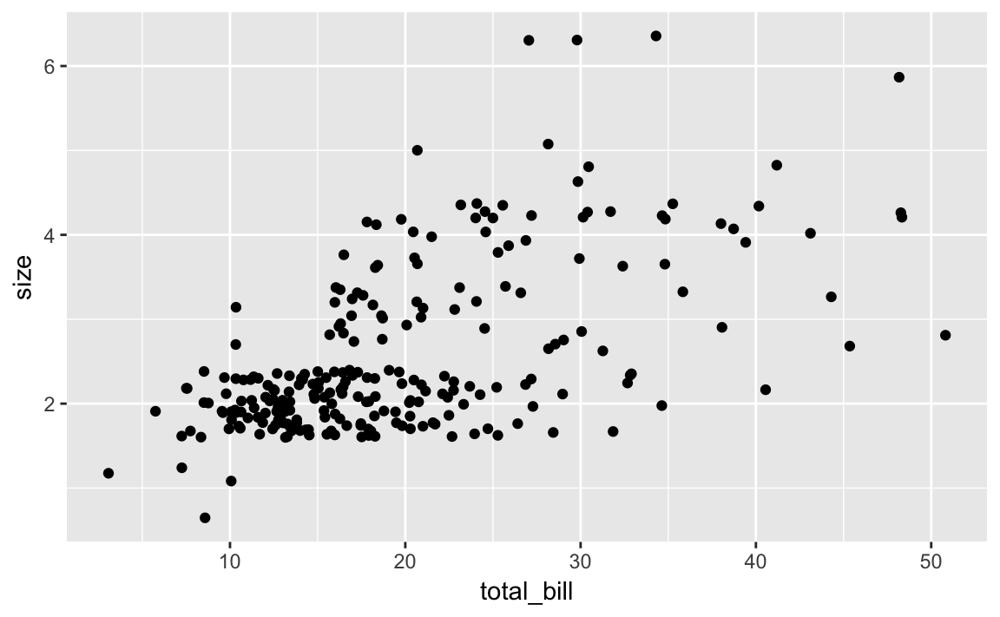
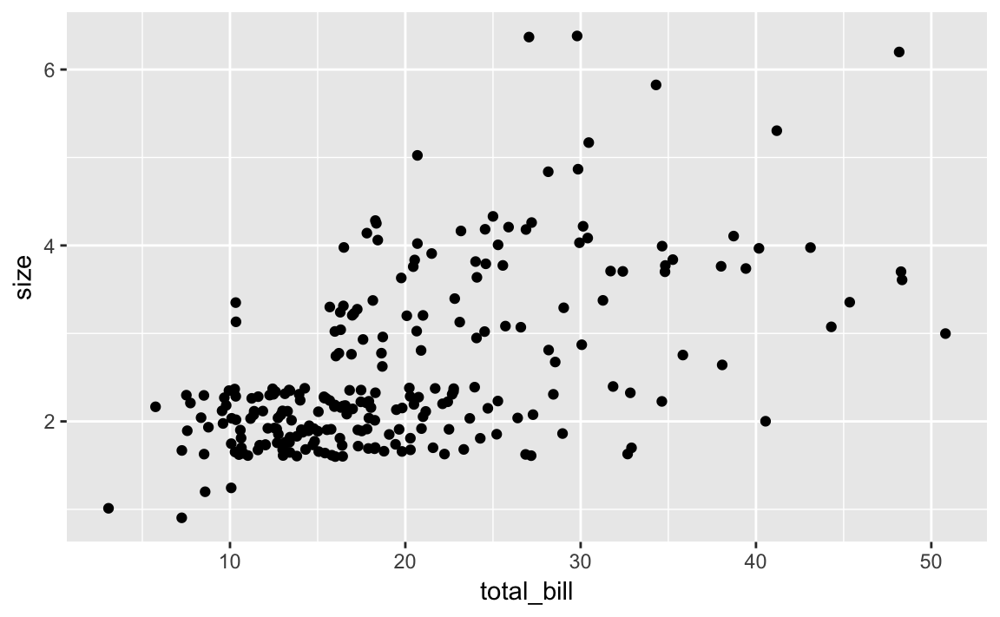
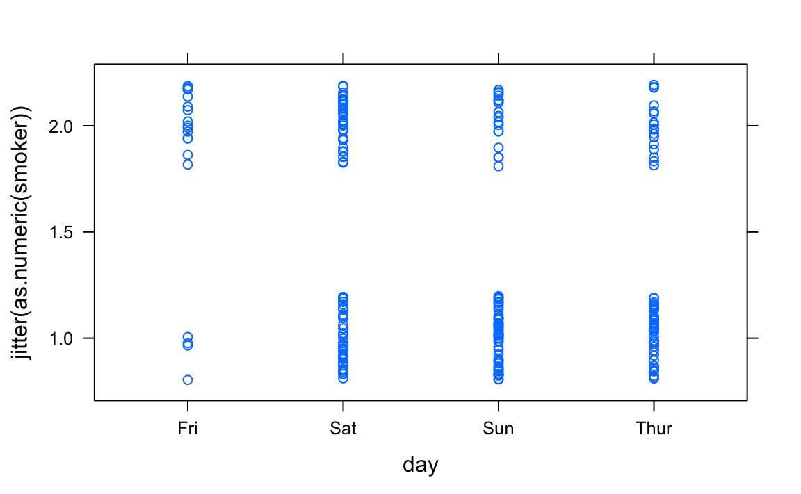
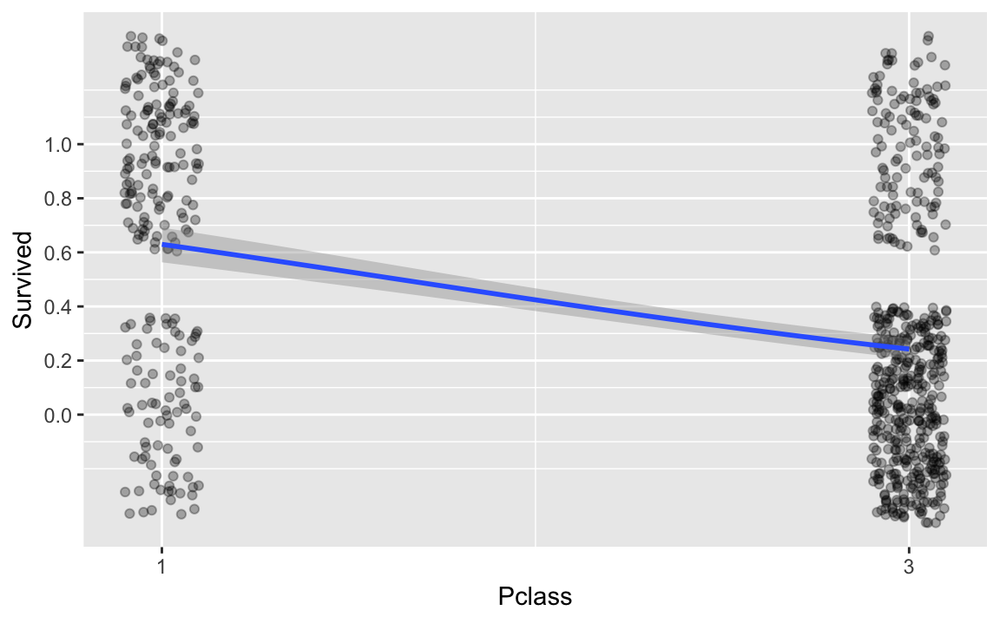
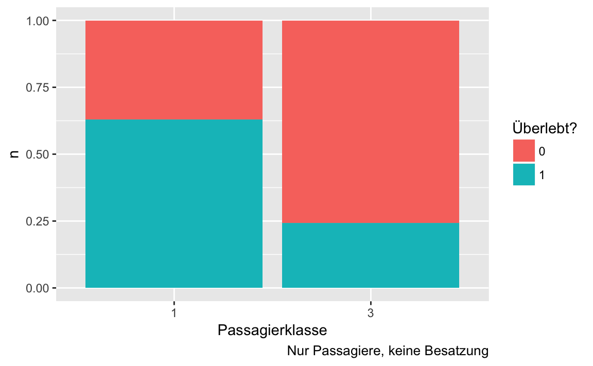

Kapitel 6 Geleitetes Modellieren
6.1 Einfache lineare Regression
Wir werden weiter den Datensatz tips analysieren (Bryant and Smith 1995).
Sofern noch nicht geschehen, können Sie in hier als csv-Datei herunterladen:
tips <- read.csv("https://sebastiansauer.github.io/data/tips.csv")Zur Unterstützung der Analyse wird (wieder) das Paket mosaic verwendet; außerdem laden wir ggplot2 für qplot:
library(mosaic)
library(ggplot2)Wie hängen Trinkgeldhöhe tip und Rechnungshöhe total_bill zusammen? Kann die Höhe des Trinkgeldes als lineare Funktion der Rechnungshöhe linear modelliert werden? \[tip_i=\beta_0+\beta_1\cdot total\_bill_i+\epsilon_i\]
Zunächst eine visuelle Analyse mi Hilfe eines Scatterplots.
qplot(y = tip, x = total_bill, data = tips)
Es scheint einen positiven Zusammenhang zu geben. Modellieren wir die abhängige Variable tip (inhaltliche Entscheidung!) als lineare Funktion der unabhängigen Variable total_bill:
LinMod.1 <- lm(tip ~ total_bill, data=tips)
summary(LinMod.1)
#>
#> Call:
#> lm(formula = tip ~ total_bill, data = tips)
#>
#> Residuals:
#> Min 1Q Median 3Q Max
#> -3.198 -0.565 -0.097 0.486 3.743
#>
#> Coefficients:
#> Estimate Std. Error t value Pr(>|t|)
#> (Intercept) 0.92027 0.15973 5.76 2.5e-08 ***
#> total_bill 0.10502 0.00736 14.26 < 2e-16 ***
#> ---
#> Signif. codes: 0 '***' 0.001 '**' 0.01 '*' 0.05 '.' 0.1 ' ' 1
#>
#> Residual standard error: 1.02 on 242 degrees of freedom
#> Multiple R-squared: 0.457, Adjusted R-squared: 0.454
#> F-statistic: 203 on 1 and 242 DF, p-value: <2e-16Der Achsenabschnitt (intercept) wird mit 0.92 geschätzt, die Steigung in Richtung total_bill mit 0.11: steigt total_bill um einen Dollar, steigt im Durchschnitt tip um 0.11. Die (Punkt-)Prognose für tip lautet also
tip = 0.92 + 0.11 * total_bill
Die Koeffzienten werden dabei so geschätzt, dass \(\sum \epsilon_i^2\) minimiert wird. Dies wird auch als Kleinste Quadrate (Ordinary Least Squares, OLS) Kriterium bezeichnet. Eine robuste Regression ist z. B. mit der Funktion rlm() aus dem Paket MASS möglich.
In mosaic kann ein solches Modell einfach als neue Funktion definiert werden:
LinMod.1Fun <- makeFun(LinMod.1)Die (Punkt-)Prognose für die Trinkgeldhöhe, bspw. für eine Rechnung von 30$ kann dann berechnet werden
LinMod.1Fun(total_bill=30)
#> 1
#> 4.07also 4.07$.
In mosaic kann die Modellgerade über
plotModel(LinMod.1)
betrachtet werden. Das Bestimmtheitsmaß R² ist mit 0.46 “ok”: 46-% der Variation des Trinkgeldes wird im Modell erklärt.
6.1.1 Überprüfung der Annahmen
Aber wie sieht es mit den Annahmen aus?
- Die Linearität des Zusammenhangs haben wir zu Beginn mit Hilfe des Scatterplots “überprüft”.
- Zur Überprüfung der Normalverteilung der Residuen zeichnen wir ein Histogramm. Die Residuen können über den Befehl
resid()aus einem Linearen Modell extrahiert werden. Hier scheint es zu passen:
resid_df <- data.frame(Residuen = resid(LinMod.1))
qplot(x = Residuen, data = resid_df)
- Konstante Varianz: Dies kann z. B. mit einem Scatterplot der Residuen auf der y-Achse und den angepassten Werten auf der x-Achse überprüft werden. Die angepassten (geschätzten) Werte werden über den Befehl
fitted()31 extrahiert. Diese Annahme scheint verletzt zu sein (siehe unten): je größer die Prognose des Trinkgeldes, desto größer wirkt die Streuung der Residuen. Dieses Phänomen ließ sich schon aus dem ursprünglichen Scatterplotqplot(x = tip, y = total_bill, data=tips)erahnen. Das ist auch inhaltlich plausibel: je höher die Rechnung, desto höher die Varianz beim Trinkgeld. Die Verletzung dieser Annahme beeinflusst nicht die Schätzung der Steigung, sondern die Schätzung des Standardfehlers, also des p-Wertes des Hypothesentests, d. h., \(H_0:\beta_1=0\).
resid_df$fitted <- fitted(LinMod.1)
qplot(x = Residuen, y = fitted, data = resid_df)
- Extreme Ausreißer: Wie am Plot der Linearen Regression
plotModel(LinMod.1)erkennbar, gibt es vereinzelt Ausreißer nach oben, allerdings ohne einen extremen Hebel.
Hängt die Rechnungshöhe von der Anzahl der Personen ab? Bestimmt, aber wie?
xyplot(total_bill ~ size, data=tips)
Da bei diskreten metrischen Variablen (hier size) Punkte übereinander liegen können, sollte man “jittern” (“schütteln”), d. h., eine (kleine) Zufallszahl addieren:
qplot(x = total_bill, y = size, data = tips, geom = "jitter")
Um wie viel Dollar steigt im Durchschnitt das Trinkgeld, wenn eine Person mehr am Tisch sitzt?
- Für wie aussagekräftig halten Sie Ihr Ergebnis aus 1.?
6.1.2 Regression mit kategorialen Werten
Der Wochentag day ist eine kategoriale Variable. Wie sieht eine Regression des Trinkgeldes darauf aus?
Zunächst grafisch:
qplot(x = tip,y = day, data=tips)
Und als Lineares Modell:
LinMod.2 <- lm(tip ~ day, data=tips)
summary(LinMod.2)
#>
#> Call:
#> lm(formula = tip ~ day, data = tips)
#>
#> Residuals:
#> Min 1Q Median 3Q Max
#> -2.245 -0.993 -0.235 0.538 7.007
#>
#> Coefficients:
#> Estimate Std. Error t value Pr(>|t|)
#> (Intercept) 2.7347 0.3161 8.65 7.5e-16 ***
#> daySat 0.2584 0.3489 0.74 0.46
#> daySun 0.5204 0.3534 1.47 0.14
#> dayThur 0.0367 0.3613 0.10 0.92
#> ---
#> Signif. codes: 0 '***' 0.001 '**' 0.01 '*' 0.05 '.' 0.1 ' ' 1
#>
#> Residual standard error: 1.38 on 240 degrees of freedom
#> Multiple R-squared: 0.0205, Adjusted R-squared: 0.00823
#> F-statistic: 1.67 on 3 and 240 DF, p-value: 0.174Die im Modell angegebenen Schätzwerte sind die Änderung der Trinkgeldprognose, wenn z. B. der Tag ein Samstag (daySat) im Vergleich zu einer Referenzkategorie. Dies ist in R das erste Element des Vektors der Faktorlevel. Welcher dies ist ist über den Befehl levels() zu erfahren
levels(tips$day)
#> [1] "Fri" "Sat" "Sun" "Thur"hier also Fri (aufgrund der standardmäßig aufsteigenden alphanumerischen Sortierung). Dies kann über relevel() geändert werden. Soll z. B. die Referenz der Donnerstag, Thur sein:
tips$day <- relevel(tips$day, ref = "Thur")
levels(tips$day)
#> [1] "Thur" "Fri" "Sat" "Sun"Das Modell ändert sich entsprechend:
LinMod.3 <- lm(tip ~ day, data=tips)
summary(LinMod.3)
#>
#> Call:
#> lm(formula = tip ~ day, data = tips)
#>
#> Residuals:
#> Min 1Q Median 3Q Max
#> -2.245 -0.993 -0.235 0.538 7.007
#>
#> Coefficients:
#> Estimate Std. Error t value Pr(>|t|)
#> (Intercept) 2.7715 0.1750 15.84 <2e-16 ***
#> dayFri -0.0367 0.3613 -0.10 0.919
#> daySat 0.2217 0.2290 0.97 0.334
#> daySun 0.4837 0.2358 2.05 0.041 *
#> ---
#> Signif. codes: 0 '***' 0.001 '**' 0.01 '*' 0.05 '.' 0.1 ' ' 1
#>
#> Residual standard error: 1.38 on 240 degrees of freedom
#> Multiple R-squared: 0.0205, Adjusted R-squared: 0.00823
#> F-statistic: 1.67 on 3 and 240 DF, p-value: 0.174sowie als Plot:
plotModel(LinMod.3)
Eine Alternative zu relevel() zur Bestimmung der Referenzkategorie ist es, innerhalb von factor() die Option levels= direkt in der gewünschten Sortierung zu setzen.
day <- factor(tips$day, levels=c("Thur", "Fri", "Sat", "Sun"))Die (Punkt-)Prognose für die Trinkgeldhöhe, bspw. an einen Freitag kann dann berechnet werden
LinMod.3Fun <- makeFun(LinMod.3)
LinMod.3Fun(day="Fri")
#> 1
#> 2.73- Wie verändert sich die Rechnungshöhe im Durchschnitt, wenn die Essenszeit Dinner statt Lunch ist?
- Wie viel % der Variation der Rechnungshöhe können Sie durch die Essenszeit modellieren?
6.1.3 Multiple Regression
Aber wie wirken sich die Einflussgrößen zusammen auf das Trinkgeld aus?
LinMod.4 <- lm(tip ~ total_bill + size + sex + smoker + day + time, data=tips)
summary(LinMod.4)
#>
#> Call:
#> lm(formula = tip ~ total_bill + size + sex + smoker + day + time,
#> data = tips)
#>
#> Residuals:
#> Min 1Q Median 3Q Max
#> -2.848 -0.573 -0.103 0.476 4.108
#>
#> Coefficients:
#> Estimate Std. Error t value Pr(>|t|)
#> (Intercept) 0.6416 0.4976 1.29 0.199
#> total_bill 0.0945 0.0096 9.84 <2e-16 ***
#> size 0.1760 0.0895 1.97 0.051 .
#> sexMale -0.0324 0.1416 -0.23 0.819
#> smokerYes -0.0864 0.1466 -0.59 0.556
#> dayFri 0.1623 0.3934 0.41 0.680
#> daySat 0.0408 0.4706 0.09 0.931
#> daySun 0.1368 0.4717 0.29 0.772
#> timeLunch 0.0681 0.4446 0.15 0.878
#> ---
#> Signif. codes: 0 '***' 0.001 '**' 0.01 '*' 0.05 '.' 0.1 ' ' 1
#>
#> Residual standard error: 1.02 on 235 degrees of freedom
#> Multiple R-squared: 0.47, Adjusted R-squared: 0.452
#> F-statistic: 26.1 on 8 and 235 DF, p-value: <2e-16Interessant sind die negativen Vorzeichen vor den Schätzwerten für sexMale und smokerYes – anscheinend geben Männer und Raucher weniger Trinkgeld, wenn alle anderen Faktoren konstant bleiben. Bei einer rein univariaten Betrachtung wäre etwas anderes herausgekommen.
summary(lm(tip ~ sex, data=tips))
#>
#> Call:
#> lm(formula = tip ~ sex, data = tips)
#>
#> Residuals:
#> Min 1Q Median 3Q Max
#> -2.090 -1.090 -0.090 0.667 6.910
#>
#> Coefficients:
#> Estimate Std. Error t value Pr(>|t|)
#> (Intercept) 2.833 0.148 19.14 <2e-16 ***
#> sexMale 0.256 0.185 1.39 0.17
#> ---
#> Signif. codes: 0 '***' 0.001 '**' 0.01 '*' 0.05 '.' 0.1 ' ' 1
#>
#> Residual standard error: 1.38 on 242 degrees of freedom
#> Multiple R-squared: 0.0079, Adjusted R-squared: 0.0038
#> F-statistic: 1.93 on 1 and 242 DF, p-value: 0.166
summary(lm(tip ~ smoker, data=tips))
#>
#> Call:
#> lm(formula = tip ~ smoker, data = tips)
#>
#> Residuals:
#> Min 1Q Median 3Q Max
#> -2.009 -0.994 -0.100 0.558 6.991
#>
#> Coefficients:
#> Estimate Std. Error t value Pr(>|t|)
#> (Intercept) 2.9919 0.1128 26.52 <2e-16 ***
#> smokerYes 0.0169 0.1828 0.09 0.93
#> ---
#> Signif. codes: 0 '***' 0.001 '**' 0.01 '*' 0.05 '.' 0.1 ' ' 1
#>
#> Residual standard error: 1.39 on 242 degrees of freedom
#> Multiple R-squared: 3.51e-05, Adjusted R-squared: -0.0041
#> F-statistic: 0.00851 on 1 and 242 DF, p-value: 0.927Diese Umkehrung des modellierten Effektes liegt daran, dass es auch einen positiven Zusammenhang zur Rechnungshöhe gibt:
summary(lm(total_bill ~ sex, data=tips))
#>
#> Call:
#> lm(formula = total_bill ~ sex, data = tips)
#>
#> Residuals:
#> Min 1Q Median 3Q Max
#> -14.99 -6.02 -1.94 3.99 30.07
#>
#> Coefficients:
#> Estimate Std. Error t value Pr(>|t|)
#> (Intercept) 18.057 0.946 19.08 <2e-16 ***
#> sexMale 2.687 1.180 2.28 0.024 *
#> ---
#> Signif. codes: 0 '***' 0.001 '**' 0.01 '*' 0.05 '.' 0.1 ' ' 1
#>
#> Residual standard error: 8.83 on 242 degrees of freedom
#> Multiple R-squared: 0.021, Adjusted R-squared: 0.0169
#> F-statistic: 5.19 on 1 and 242 DF, p-value: 0.0236
summary(lm(total_bill ~ smoker, data=tips))
#>
#> Call:
#> lm(formula = total_bill ~ smoker, data = tips)
#>
#> Residuals:
#> Min 1Q Median 3Q Max
#> -17.69 -6.46 -1.89 4.58 30.05
#>
#> Coefficients:
#> Estimate Std. Error t value Pr(>|t|)
#> (Intercept) 19.188 0.723 26.53 <2e-16 ***
#> smokerYes 1.568 1.172 1.34 0.18
#> ---
#> Signif. codes: 0 '***' 0.001 '**' 0.01 '*' 0.05 '.' 0.1 ' ' 1
#>
#> Residual standard error: 8.89 on 242 degrees of freedom
#> Multiple R-squared: 0.00735, Adjusted R-squared: 0.00325
#> F-statistic: 1.79 on 1 and 242 DF, p-value: 0.182Im vollem Modell LinMod.4 sind alle unabhängigen Variablen berücksichtigt, die Koeffizienten beziehen sich dann immer auf: gegeben, die anderen Variablen bleiben konstant, d. h. ceteris paribus.
Vergleichen wir mal zwei Modelle:
LinMod.5a <- lm(tip ~ sex, data=tips)
coef(LinMod.5a) # Koeffizienten extrahieren
#> (Intercept) sexMale
#> 2.833 0.256
LinMod.5b <- lm(tip ~ sex + total_bill, data=tips)
coef(LinMod.5b) # Koeffizienten extrahieren
#> (Intercept) sexMale total_bill
#> 0.9333 -0.0266 0.1052Ohne die Berücksichtigung der Kovariable/Störvariable Rechnungshöhe geben Male ein um im Durchschnitt 0.26$ höheres Trinkgeld, bei Kontrolle, d. h. gleicher Rechnungshöhe ein um 0.03$ niedrigeres Trinkgeld als die Referenzklasse Female (levels(tips$sex)[1]).
6.1.4 Inferenz in der linearen Regression
Kehren wir noch einmal zur multivariaten Regression (LinMod.4) zurück.
summary(LinMod.4)
#>
#> Call:
#> lm(formula = tip ~ total_bill + size + sex + smoker + day + time,
#> data = tips)
#>
#> Residuals:
#> Min 1Q Median 3Q Max
#> -2.848 -0.573 -0.103 0.476 4.108
#>
#> Coefficients:
#> Estimate Std. Error t value Pr(>|t|)
#> (Intercept) 0.6416 0.4976 1.29 0.199
#> total_bill 0.0945 0.0096 9.84 <2e-16 ***
#> size 0.1760 0.0895 1.97 0.051 .
#> sexMale -0.0324 0.1416 -0.23 0.819
#> smokerYes -0.0864 0.1466 -0.59 0.556
#> dayFri 0.1623 0.3934 0.41 0.680
#> daySat 0.0408 0.4706 0.09 0.931
#> daySun 0.1368 0.4717 0.29 0.772
#> timeLunch 0.0681 0.4446 0.15 0.878
#> ---
#> Signif. codes: 0 '***' 0.001 '**' 0.01 '*' 0.05 '.' 0.1 ' ' 1
#>
#> Residual standard error: 1.02 on 235 degrees of freedom
#> Multiple R-squared: 0.47, Adjusted R-squared: 0.452
#> F-statistic: 26.1 on 8 and 235 DF, p-value: <2e-16In der 4. Spalte der, mit Zeilennamen versehenen Tabelle Coefficients stehen die p-Werte der Nullhypothese, die unabhängige Variable hat, gegeben alle anderen Variablen im Modell, keinen linearen Einfluss auf die abhängige Variable: \(H_0: \beta_i=0\). Zur Bestimmung des p-Wertes wird der Schätzer (Estimate) durch den Standardfehler (Std. Error) dividiert. Der resultierende t-Wert (t value) wird dann, zusammen mit der Anzahl an Freiheitsgraden zur Berechnung des p-Wertes (Pr(>|t|)) verwendet. Ein einfacher t-Test!
Zur schnelleren Übersicht finden sich dahinter “Sternchen” und “Punkte”, die die entsprechenden Signifikanzniveaus symbolisieren: *** bedeutet eine Irrtumswahrscheinlichkeit, Wahrscheinlichkeit für Fehler 1. Art, von unter 0.001, d. h. unter 0,1%. ** entsprechend 1%, * 5% und . 10%.
Zum Signifikanzniveau von 10% sind hier also zwei Faktoren und der Achsenabschnitt ((Intercept)) signifikant – nicht notwendigerweise relevant: Rechnungshöhe total_bill sowie Anzahl Personen size. Beides wirkt sich linear positiv auf die Trinkgeldhöhe aus: Mit jedem Dollar Rechnungshöhe steigt im Mittelwert die Trinkgeldhöhe um 0.09 Dollar, mit jeder Person um 0.18 Dollar – gegeben alle anderen Faktoren bleiben konstant. Das Bestimmtheitsmaß R² (Multiple R-squared:) liegt bei 0.47, also 47% der Variation des Trinkgeldes wird im Modell erklärt.
Außerdem wird getestet, ob alle Koeffizienten der unabhängigen Variablen gleich Null sind: \[H_0: \beta_1=\beta_2=\cdots=\beta_k=0\] Das Ergebnis des zugrundeliegenden F-Tests (vgl. Varianzanalyse) wird in der letzten Zeile angegeben (F-Statistic). Hier wird \(H_0\) also verworfen.
6.1.5 Erweiterungen
6.1.5.1 Modellwahl
Das Modell mit allen Variablen des Datensatzes, d. h., mit 6 unabhängigen (LinMod.4) erklärt 47.01% der Variation, das Modell nur mit der Rechnungshöhe als erklärende Variable (LinMod.1) schon 45.66%, der Erklärungszuwachs liegt also gerade einmal bei 1.35 Prozentpunkten. In der Statistik ist die Wahl des richtigen Modells eine der größten Herausforderungen, auch deshalb, weil das wahre Modell in der Regel nicht bekannt ist und es schwer ist, die richtige Balance zwischen Einfachheit und Komplexität zu finden. Aufgrund des Zufalls kann es immer passieren, dass das Modell sich zu sehr an die zufälligen Daten anpasst (Stichwort: Overfitting). Es gibt unzählige Modellwahlmethoden, und leider garantiert keine, dass immer das beste Modell gefunden wird. Eine Möglichkeit ist die sogenannte Schrittweise-Rückwärtsselektion auf Basis des Akaike-Informationskriteriums (AIC)32. Diese ist nicht nur recht weit verbreitet - und liefert unter bestimmten Annahmen das “richtige” Modell - sondern in R durch den Befehl step() einfach umsetzbar:
step(LinMod.4)
#> Start: AIC=20.5
#> tip ~ total_bill + size + sex + smoker + day + time
#>
#> Df Sum of Sq RSS AIC
#> - day 3 0.6 247 15.1
#> - time 1 0.0 247 18.5
#> - sex 1 0.1 247 18.6
#> - smoker 1 0.4 247 18.9
#> <none> 247 20.5
#> - size 1 4.1 251 22.5
#> - total_bill 1 101.6 348 102.7
#>
#> Step: AIC=15.1
#> tip ~ total_bill + size + sex + smoker + time
#>
#> Df Sum of Sq RSS AIC
#> - time 1 0.0 247 13.1
#> - sex 1 0.0 247 13.2
#> - smoker 1 0.4 248 13.5
#> <none> 247 15.1
#> - size 1 4.3 251 17.4
#> - total_bill 1 101.7 349 97.2
#>
#> Step: AIC=13.1
#> tip ~ total_bill + size + sex + smoker
#>
#> Df Sum of Sq RSS AIC
#> - sex 1 0.0 247 11.2
#> - smoker 1 0.4 248 11.5
#> <none> 247 13.1
#> - size 1 4.3 251 15.4
#> - total_bill 1 103.3 350 96.3
#>
#> Step: AIC=11.2
#> tip ~ total_bill + size + smoker
#>
#> Df Sum of Sq RSS AIC
#> - smoker 1 0.4 248 9.5
#> <none> 247 11.2
#> - size 1 4.3 252 13.4
#> - total_bill 1 104.3 351 95.0
#>
#> Step: AIC=9.53
#> tip ~ total_bill + size
#>
#> Df Sum of Sq RSS AIC
#> <none> 248 9.5
#> - size 1 5.2 253 12.6
#> - total_bill 1 106.3 354 94.7
#>
#> Call:
#> lm(formula = tip ~ total_bill + size, data = tips)
#>
#> Coefficients:
#> (Intercept) total_bill size
#> 0.6689 0.0927 0.1926In den letzten Zeilen der Ausgabe steht das beste Modell, das diese Methode (schrittweise, rückwärts) mit diesem Kriterium (AIC) bei diesen Daten findet (Punktprognose, d. h. ohne Residuum):
tip = 0.66894 + 0.09271 * total_bill + 0.19260 * size
Der Ausgabe können Sie auch entnehmen, welche Variablen in welcher Reihenfolge entfernt wurden: Zunächst day, dann time, danach sex und schließlich smoker. Hier sind also dieselben Variablen noch im Modell, die auch in LinMod.4 signifikant zum Niveau 10% waren, eine Auswahl der dort signifikanten Variablen hätte also dasselbe Modell ergeben. Das ist häufig so, aber nicht immer!
6.1.5.2 Interaktionen
Wir haben gesehen, dass es einen Zusammenhang zwischen der Trinkgeldhöhe und der Rechnungshöhe gibt. Vielleicht unterscheidet sich der Zusammenhang je nachdem, ob geraucht wurde, d. h., vielleicht gibt es eine Interaktion (Wechselwirkung). Die kann in lm einfach durch ein * zwischen den unabhängigen Variablen modelliert werden:
LinMod.6 <- lm(tip ~ smoker*total_bill, data = tips)
summary(LinMod.6)
#>
#> Call:
#> lm(formula = tip ~ smoker * total_bill, data = tips)
#>
#> Residuals:
#> Min 1Q Median 3Q Max
#> -2.679 -0.524 -0.120 0.475 4.900
#>
#> Coefficients:
#> Estimate Std. Error t value Pr(>|t|)
#> (Intercept) 0.36007 0.20206 1.78 0.07601 .
#> smokerYes 1.20420 0.31226 3.86 0.00015 ***
#> total_bill 0.13716 0.00968 14.17 < 2e-16 ***
#> smokerYes:total_bill -0.06757 0.01419 -4.76 3.3e-06 ***
#> ---
#> Signif. codes: 0 '***' 0.001 '**' 0.01 '*' 0.05 '.' 0.1 ' ' 1
#>
#> Residual standard error: 0.979 on 240 degrees of freedom
#> Multiple R-squared: 0.506, Adjusted R-squared: 0.5
#> F-statistic: 81.9 on 3 and 240 DF, p-value: <2e-16Der Schätzwert für die Interaktion steht bei :. Hier also: Wenn geraucht wurde, ist die Steigung im Durchschnitt um 6,8 Cent geringer. Aber wenn geraucht wurde, ist die Rechnung im Achsenabschnitt erstmal um 1,20$ höher (Effekt, ceteris paribus). Wer will, kann ausrechnen, ab welcher Rechnungshöhe Rauchertische im Mittelwert lukrativer sind…
Das gleiche Bild (höhere Achsenabschnitt, geringere Steigung) ergibt sich übrigens bei getrennten Regressionen:
lm(tip~total_bill, data=tips, subset = smoker=="Yes")
#>
#> Call:
#> lm(formula = tip ~ total_bill, data = tips, subset = smoker ==
#> "Yes")
#>
#> Coefficients:
#> (Intercept) total_bill
#> 1.5643 0.0696
lm(tip~total_bill, data=tips, subset = smoker=="No")
#>
#> Call:
#> lm(formula = tip ~ total_bill, data = tips, subset = smoker ==
#> "No")
#>
#> Coefficients:
#> (Intercept) total_bill
#> 0.360 0.1376.1.5.3 Weitere Modellierungsmöglichkeiten
Über das Formelinterface y~x können auch direkt z. B. Polynome modelliert werden. Hier eine quadratische Funktion:
summary(lm(tip~I(total_bill^2)+total_bill, data=tips))
#>
#> Call:
#> lm(formula = tip ~ I(total_bill^2) + total_bill, data = tips)
#>
#> Residuals:
#> Min 1Q Median 3Q Max
#> -3.200 -0.559 -0.098 0.484 3.776
#>
#> Coefficients:
#> Estimate Std. Error t value Pr(>|t|)
#> (Intercept) 8.91e-01 3.47e-01 2.57 0.01078 *
#> I(total_bill^2) -5.71e-05 6.02e-04 -0.09 0.92457
#> total_bill 1.08e-01 3.08e-02 3.51 0.00054 ***
#> ---
#> Signif. codes: 0 '***' 0.001 '**' 0.01 '*' 0.05 '.' 0.1 ' ' 1
#>
#> Residual standard error: 1.02 on 241 degrees of freedom
#> Multiple R-squared: 0.457, Adjusted R-squared: 0.452
#> F-statistic: 101 on 2 and 241 DF, p-value: <2e-16D. h., die geschätzte Funktion ist eine “umgedrehte Parabel” (negatives Vorzeichen bei I(total_bill^2)), bzw. die Funktion ist konkav, die Steigung nimmt ab. Allerdings ist der Effekt nicht signifikant. Hinweis: Um zu “rechnen” und nicht beispielsweise Interaktion zu modellieren, geben Sie die Variablen in der Formel in der Funktion I() (As Is) ein.
6.1.5.4 Prognoseintervalle
Insgesamt haben wir viel “Unsicherheit” u. a. aufgrund von Variabilität in den Beobachtungen und in den Schätzungen. Wie wirken sich diese auf die Prognose aus?
Dazu können wir über die Funktion predict.lm Prognoseintervalle berechnen – hier für das einfache Modell LinMod.1:
newdat <- data.frame(total_bill = seq(0, 75))
preddat <- predict(LinMod.1, newdata = newdat, interval = "prediction")
head(preddat)
#> fit lwr upr
#> 1 0.92 -1.117 2.96
#> 2 1.03 -1.010 3.06
#> 3 1.13 -0.903 3.16
#> 4 1.24 -0.797 3.27
#> 5 1.34 -0.690 3.37
#> 6 1.45 -0.583 3.47
tail(preddat)
#> fit lwr upr
#> 71 8.27 6.13 10.4
#> 72 8.38 6.23 10.5
#> 73 8.48 6.33 10.6
#> 74 8.59 6.43 10.7
#> 75 8.69 6.53 10.9
#> 76 8.80 6.63 11.0
matplot(newdat$total_bill, preddat, lty = c(1,2,2), type="l" )
points(x=tips$total_bill, y=tips$tip)
Sie sehen, dass 95% Prognoseintervall ist recht breit: über den gewählten Rechnungsbereich von \(0-75\)$ im Mittelwert bei 4.11$.
favstats((preddat[,3]-preddat[,2]))
#> min Q1 median Q3 max mean sd n missing
#> 4.03 4.04 4.07 4.17 4.34 4.12 0.0904 76 0Zu den Rändern hin wird es breiter. Am schmalsten ist es übrigens beim Mittelwert der unabhängigen Beobachtungen, hier also bei 19.79$.
6.1.6 Übung: Teaching Rating
Dieser Datensatz analysiert u. a. den Zusammenhang zwischen Schönheit und Evaluierungsergebnis von Dozenten (Hamermesh and Parker 2005). Sie können ihn, sofern noch nicht geschehen, von https://goo.gl/6Y3KoK als csv herunterladen.
Versuchen Sie, das Evaluierungsergebnis als abhängige Variable anhand geeigneter Variablen des Datensatzes zu erklären. Wie groß ist der Einfluss der Schönheit? Sind die Modellannahmen erfüllt und wie beurteilen Sie die Modellgüte?
6.1.7 Literatur
- David M. Diez, Christopher D. Barr, Mine Çetinkaya-Rundel (2014): Introductory Statistics with Randomization and Simulation, https://www.openintro.org/stat/textbook.php?stat_book=isrs, Kapitel 5, 6.1-6.3
- Nicholas J. Horton, Randall Pruim, Daniel T. Kaplan (2015): Project MOSAIC Little Books A Student’s Guide to R, https://github.com/ProjectMOSAIC/LittleBooks/raw/master/StudentGuide/MOSAIC-StudentGuide.pdf, Kapitel 5.4, 10.2
- Gareth James, Daniela Witten, Trevor Hastie, Robert Tibshirani (2013): An Introduction to Statistical Learning – with Applications in R, http://www-bcf.usc.edu/~gareth/ISL/, Kapitel 3
- Maike Luhmann (2015): R für Einsteiger, Kapitel 16, 17.1-17.3
- Andreas Quatember (2010): Statistik ohne Angst vor Formeln, Kapitel 3.11
- Daniel Wollschläger (2014): Grundlagen der Datenanalyse mit R, Kapitel 6
Diese Übung basiert teilweise auf Übungen zum Buch OpenIntro von Andrew Bray und Mine Çetinkaya-Rundel unter der Lizenz Creative Commons Attribution-ShareAlike 3.0 Unported.
6.2 Klassifizierende Regression
6.2.1 Vorbereitung
Hier werden wir den Datensatz Aktienkauf der Universität Zürich (Universität Zürich, Methodenberatung) analysieren. Es handelt es sich hierbei um eine Befragung einer Bank im Zusammenhang mit den Fakten, die mit der Wahrscheinlichkeit, dass jemand Aktien erwirbt, zusammenhängen. Es wurden 700 Personen befragt. Folgende Daten wurden erhoben: Aktienkauf (0 = nein, 1 = ja), Jahreseinkommen (in Tausend CHF), Risikobereitschaft (Skala von 0 bis 25) und Interesse an der aktuellen Marktlage (Skala von 0 bis 45).
Den Datensatz können Sie in so als csv-Datei herunterladen:
Aktien <- read.csv2("https://raw.githubusercontent.com/luebby/Datenanalyse-mit-R/master/Daten/Aktienkauf.csv")Zur Unterstützung der Analyse wird (wieder) mosaic und ggplot2 verwendet.
library(mosaic)
library(ggplot2)6.2.2 Problemstellung
Können wir anhand der Risikobereitschaft abschätzen, ob die Wahrscheinlichkeit für einen Aktienkauf steigt? Schauen wir uns zunächst ein Streudiagramm an:
xyplot(Aktienkauf ~ Risikobereitschaft, data = Aktien)
Der Zusammenhang scheint nicht sehr ausgeprägt zu sein. Lassen Sie uns dennoch ein lineare Regression durchführen und das Ergebnis auswerten und graphisch darstellen.
lm1 <- lm(Aktienkauf ~ Risikobereitschaft, data = Aktien)
summary(lm1)
#>
#> Call:
#> lm(formula = Aktienkauf ~ Risikobereitschaft, data = Aktien)
#>
#> Residuals:
#> Min 1Q Median 3Q Max
#> -0.684 -0.243 -0.204 0.348 0.814
#>
#> Coefficients:
#> Estimate Std. Error t value Pr(>|t|)
#> (Intercept) 0.18246 0.02001 9.12 < 2e-16 ***
#> Risikobereitschaft 0.05083 0.00762 6.67 5.2e-11 ***
#> ---
#> Signif. codes: 0 '***' 0.001 '**' 0.01 '*' 0.05 '.' 0.1 ' ' 1
#>
#> Residual standard error: 0.427 on 698 degrees of freedom
#> Multiple R-squared: 0.0599, Adjusted R-squared: 0.0586
#> F-statistic: 44.5 on 1 and 698 DF, p-value: 5.25e-11
plotModel(lm1)
Der Schätzer für die Steigung für Risikobereitschaft ist signifikant. Das Bestimmtheitsmaß R ist allerdings sehr niedrig, aber wir haben bisher ja auch nur eine unabhängige Variable für die Erklärung der abhängigen Variable herangezogen.
Doch was bedeutet es, dass die Wahrscheinlichkeit ab einer Risikobereitsschaft von ca. 16 über 1 liegt?
Wahrscheinlichkeiten müssen zwischen 0 und 1 liegen. Daher brauchen wir eine Funktion, die das Ergebnis einer linearen Regression in einen Bereich von 0 bis 1 bringt, die sogenannte Linkfunktion. Eine häufig dafür verwendete Funktion ist die logistische Funktion: \[p(y=1)=\frac{e^\eta}{1+e^\eta}=\frac{1}{1+e^{-\eta}}\]
\(\eta\), das sogenannte Logit, ist darin die Linearkombination der Einflussgrößen: \[\eta=\beta_0+\beta_1\cdot x_1+\dots\]
Exemplarisch können wir die logistische Funktion für einen Bereich von \(\eta=-10\) bis \(+10\) darstellen:

6.2.3 Die Idee der logistischen Regression
Die logistische Regression ist eine Anwendung des allgemeinen linearen Modells (general linear model, GLM). Die Modellgleichung lautet: \[p(y_i=1)=L\bigl(\beta_0+\beta_1\cdot x_{i1}+\dots+\beta_K\cdot x_{ik}\bigr)+\epsilon_i\]
\(L\) ist die Linkfunktion, in unserer Anwendung die logistische Funktion.
\(x_{ik}\) sind die beobachten Werte der unabhängigen Variablen \(X_k\).
\(k\) sind die unabhängigen Variablen \(1\) bis \(K\).
Die Funktion glm führt die logistische Regression durch. Wir schauen uns im Anschluss zunächst den Plot an.
glm1 <- glm(Aktienkauf ~ Risikobereitschaft, family = binomial("logit"),
data = Aktien)
plotModel(glm1)
Es werden ein Streudiagramm der beobachten Werte sowie die Regressionslinie ausgegeben. Wir können so z. B. ablesen, dass ab einer Risikobereitschaft von etwa 7 die Wahrscheinlichkeit für einen Aktienkauf nach unserem Modell bei mehr als 50 % liegt.
Die Zusammenfassung des Modells zeigt folgendes:
summary(glm1)
#>
#> Call:
#> glm(formula = Aktienkauf ~ Risikobereitschaft, family = binomial("logit"),
#> data = Aktien)
#>
#> Deviance Residuals:
#> Min 1Q Median 3Q Max
#> -1.653 -0.738 -0.677 0.825 1.823
#>
#> Coefficients:
#> Estimate Std. Error z value Pr(>|z|)
#> (Intercept) -1.4689 0.1184 -12.4 < 2e-16 ***
#> Risikobereitschaft 0.2573 0.0468 5.5 3.8e-08 ***
#> ---
#> Signif. codes: 0 '***' 0.001 '**' 0.01 '*' 0.05 '.' 0.1 ' ' 1
#>
#> (Dispersion parameter for binomial family taken to be 1)
#>
#> Null deviance: 804.36 on 699 degrees of freedom
#> Residual deviance: 765.86 on 698 degrees of freedom
#> AIC: 769.9
#>
#> Number of Fisher Scoring iterations: 4Der Achsenabschnitt (intercept) des logits \(\eta\) wird mit -1.47 geschätzt, die Steigung in Richtung Risikobereitschaft mit 0.26. Die (Punkt-)Prognose für die Wahrscheinlickeit eines Aktienkaufs \(p(y=1)\) benötigt anders als in der linearen Regression noch die Linkfunktion und ergibt sich somit zu: \[p(\texttt{Aktienkauf}=1)=\frac{1}{1+e^{-(-1.47 + 0.26 \cdot \texttt{Risikobereitschaft})}}\]
Die p-Werte der Koeffizienten können in der Spalte Pr(>|z|) abgelesen werden. Hier wird ein Wald-Test durchgeführt, nicht wie bei der linearen Regression ein t-Test, ebenfalls mit der \(H_0:\beta_i=0\). Die Teststastistik (z value) wird wie in der linearen Regression durch Divisions des Schätzers (Estimate) durch den Standardfehler (Std. Error) ermittelt. Im Wald-Test ist die Teststatistik allerdings \(\chi^2\)-verteilt mit einem Freiheitsgrad.
6.2.4 Welche Unterschiede zur linearen Regression gibt es in der Ausgabe?
Es gibt kein R im Sinne einer erklärten Streuung der \(y\)-Werte, da die beobachteten \(y\)-Werte nur \(0\) oder \(1\) annehmen können. Das Gütemaß bei der logistischen Regression ist das Akaike Information Criterion (AIC). Hier gilt allerdings: je kleiner, desto besser. (Anmerkung: es kann ein Pseudo-R berechnet werden – kommt später.)
Es gibt keine F-Statistik (oder ANOVA) mit der Frage, ob das Modell als Ganzes signifikant ist. (Anmerkung: es kann aber ein vergleichbarer Test durchgeführt werden – kommt später.)
6.2.5 Interpretation der Koeffizienten
6.2.5.1 y-Achsenabschnitt (Intercept) \(\beta_0\)
Für \(\beta_0>0\) gilt, dass selbst wenn alle anderen unabhängigen Variablen \(0\) sind, es eine Wahrscheinlichkeit von mehr als 50% gibt, dass das modellierte Ereignis eintritt. Für \(\beta_0<0\) gilt entsprechend das Umgekehrte.
6.2.5.2 Steigung \(\beta_i\) mit \(i=1,2,...,K\)
Für \(\beta_i>0\) gilt, dass mit zunehmenden \(x_i\) die Wahrscheinlichkeit für das modellierte Ereignis steigt. Bei \(\beta_i<0\) nimmt die Wahrscheinlichkeit entsprechend ab.
Eine Abschätzung der Änderung der Wahrscheinlichkeit (relatives Risiko, relative risk \(RR\)) kann über das Chancenverhältnis (Odds Ratio \(OR\)) gemacht werden.33 Es ergibt sich vereinfacht \(e^{\beta_i}\). Die Wahrscheinlichkeit ändert sich näherungsweise um diesen Faktor, wenn sich \(x_i\) um eine Einheit erhöht. Hinweis: \(RR\approx OR\) gilt nur, wenn der Anteil des modellierten Ereignisses in den beobachteten Daten sehr klein (\(<5\%\)) oder sehr groß ist (\(>95\%\)).
Übung: Berechnen Sie das relative Risiko für unser Beispielmodell, wenn sich die Risikobereitschaft um 1 erhöht (Funktion exp()). Vergleichen Sie das Ergebnis mit der Punktprognose für Risikobereitschaft\(=7\) im Vergleich zu Risikobereitschaft\(=8\). Zur Erinnerung: Sie können makeFun(model) verwenden.
# aus Koeffizient abgeschätzt
exp(coef(glm1)[2])
#> Risikobereitschaft
#> 1.29
# mit dem vollständigen Modell berechnet
fun1 <- makeFun(glm1)
fun1(Risikobereitschaft = 7)
#> 1
#> 0.582
fun1(Risikobereitschaft = 8)
#> 1
#> 0.643
# als Faktor ausgeben
fun1(Risikobereitschaft = 8)/fun1(Risikobereitschaft = 7)
#> 1
#> 1.1Sie sehen also, die ungefähr abgeschätzte Änderung der Wahrscheinlichkeit weicht hier doch deutlich von der genau berechneten Änderung ab. Der Anteil der Datensätze mit Risikobereitschaft\(=1\) liegt allerdings auch bei 0.26.
6.2.6 Kategoriale Variablen
Wie schon in der linearen Regression können auch in der logistschen Regression kategoriale Variablen als unabhängige Variablen genutzt werden. Als Beispiel nehmen wir den Datensatz tips und versuchen abzuschätzen, ob sich die Wahrscheinlichkeit dafür, dass ein Raucher bezahlt hat (smoker == yes), in Abhängigkeit vom Wochentag ändert.
Sofern noch nicht geschehen, können Sie so als csv-Datei herunterladen:
tips <- read.csv("https://sebastiansauer.github.io/data/tips.csv")Zunächst ein Plot:
xyplot(jitter(as.numeric(smoker)) ~ day, data = tips)
Hinweis: Um zu sehen, ob es an manchen Tagen mehr Raucher gibt, sollten Sie zumindest eine Variable “verrauschen” (“jittern”). Da die Variable smoker eine nominale Variable ist und die Funktion jitter() nur mit numerischen Variablen arbeitet, muss sie mit as.numeric() in eine numerische Variable umgewandelt werden.
Die relativen Häufigkeiten zeigt folgende Tabelle:
(tab_smoke <- tally(smoker ~ day, data = tips, format = "proportion"))
#> day
#> smoker Fri Sat Sun Thur
#> No 0.211 0.517 0.750 0.726
#> Yes 0.789 0.483 0.250 0.274Hinweis: Durch die Klammerung wird das Objekt tab_smoke direkt ausgegeben.
Probieren wir die logistische Regression aus:
glmtips <- glm(smoker ~ day, family = binomial("logit"),data = tips)
summary(glmtips)
#>
#> Call:
#> glm(formula = smoker ~ day, family = binomial("logit"), data = tips)
#>
#> Deviance Residuals:
#> Min 1Q Median 3Q Max
#> -1.765 -0.801 -0.758 1.207 1.665
#>
#> Coefficients:
#> Estimate Std. Error z value Pr(>|z|)
#> (Intercept) 1.322 0.563 2.35 0.01883 *
#> daySat -1.391 0.602 -2.31 0.02093 *
#> daySun -2.420 0.622 -3.89 1e-04 ***
#> dayThur -2.295 0.631 -3.64 0.00027 ***
#> ---
#> Signif. codes: 0 '***' 0.001 '**' 0.01 '*' 0.05 '.' 0.1 ' ' 1
#>
#> (Dispersion parameter for binomial family taken to be 1)
#>
#> Null deviance: 324.34 on 243 degrees of freedom
#> Residual deviance: 298.37 on 240 degrees of freedom
#> AIC: 306.4
#>
#> Number of Fisher Scoring iterations: 4Auch hier können wir die Koeffizienten in Relation zur Referenzkategorie (hier: Freitag) interpretieren. Die Wahrscheinlichkeit ist an einem Samstag niedriger, der Wert für daySat ist negativ. Eine Abschätzung erhalten wir wieder mit \(e^{\beta_i}\):
exp(coef(glmtips)[2])
#> daySat
#> 0.249Daher ist das Chancenverhältnis (Odds Ratio), dass am Samstag ein Raucher am Tisch sitzt, näherungsweise um den Faktor 0.25 niedriger als am Freitag:
\[ { OR=\frac{\frac{P(Raucher|Samstag)}{1-P(Raucher|Samstag)}} {\frac{P(Raucher|Freitag)}{1-P(Raucher|Freitag)}} =\frac{\frac{0.483}{0.517}} {\frac{0.79}{0.21}} \approx 0.249}\]
6.2.7 Multiple logistische Regression
Wir kehren wieder zurück zu dem Datensatz Aktienkauf. Können wir unser Model glm1 mit nur einer erklärenden Variable verbessern, indem weitere unabhängige Variablen hinzugefügt werden?
glm2 <- glm(Aktienkauf ~ Risikobereitschaft + Einkommen + Interesse,
family = binomial("logit"),data = Aktien)
plotModel(glm2)
summary(glm2)
#>
#> Call:
#> glm(formula = Aktienkauf ~ Risikobereitschaft + Einkommen + Interesse,
#> family = binomial("logit"), data = Aktien)
#>
#> Deviance Residuals:
#> Min 1Q Median 3Q Max
#> -2.130 -0.715 -0.539 0.518 3.214
#>
#> Coefficients:
#> Estimate Std. Error z value Pr(>|z|)
#> (Intercept) -1.66791 0.27903 -5.98 2.3e-09 ***
#> Risikobereitschaft 0.34781 0.08822 3.94 8.1e-05 ***
#> Einkommen -0.02157 0.00564 -3.83 0.00013 ***
#> Interesse 0.08520 0.01775 4.80 1.6e-06 ***
#> ---
#> Signif. codes: 0 '***' 0.001 '**' 0.01 '*' 0.05 '.' 0.1 ' ' 1
#>
#> (Dispersion parameter for binomial family taken to be 1)
#>
#> Null deviance: 804.36 on 699 degrees of freedom
#> Residual deviance: 679.01 on 696 degrees of freedom
#> AIC: 687
#>
#> Number of Fisher Scoring iterations: 5
Alle Schätzer sind signifkant zum 0.1 %-Niveau (*** in der Ausgabe). Zunehmende Risikobereitschaft (der Einfluss ist im Vergleich zum einfachen Modell stärker geworden) und zunehmendes Interesse erhöhen die Wahrscheinlichkeit für einen Aktienkauf. Steigendes Einkommen hingegen senkt die Wahrscheinlichkeit.
Ist das Modell besser als das einfache? Ja, da der AIC-Wert von 769.86 auf 687.01 gesunken ist.
Die Graphik zeigt die Verläufe in Abhängigkeit von den verschiedenen Variablen und den Kombinationen der Variablen.
6.2.8 Erweiterungen
6.2.8.1 Klassifikationsgüte
Logistische Regressionsmodelle werden häufig zur Klassifikation verwendet, z. B. ob der Kredit für einen Neukunden ein “guter” Kredit ist oder nicht. Daher sind die Klassifikationseigenschaften bei logistischen Modellen wichtige Kriterien.
Hierzu werden die aus dem Modell ermittelten Wahrscheinlichkeiten ab einem Schwellenwert (cutpoint), häufig \(0.5\), einer geschätzten \(1\) zugeordnet, unterhalb des Schwellenwertes einer \(0\). Diese aus dem Modell ermittelten Häufigkeiten werden dann in einer sogenannten Konfusionsmatrix (confusion matrix) mit den beobachteten Häufigkeiten verglichen.
Daher sind wichtige Kriterien eines Modells, wie gut diese Zuordnung erfolgt. Dazu werden die Sensitivität (True Positive Rate, TPR), also der Anteil der mit \(1\) geschätzten an allen mit \(1\) beobachten Werten, und die Spezifität (True Negative Rate) berechnet. Ziel ist es, dass beide Werte möglichst hoch sind.
Sie können die Konfusionsmatrix “zu Fuß” berechnen, in dem Sie eine neue Variable einfügen, die ab dem cutpoint \(1\) und sonst \(0\) ist und mit dem Befehl tally() ausgeben. Alternativ können Sie das Paket SDMTools verwenden mit der Funktion confusion.matrix(). Ein Parameter ist cutpoint, der standardmäßig auf \(0.5\) steht.
# Konfusionsmatrix "zu Fuß" berechnen
# cutpoint = 0.5 setzen
# neue Variable predicted anlegen mit 1, wenn modellierte Wahrscheinlichkeit > 1 ist
cutpoint = 0.5
Aktien$predicted <- ((glm1$fitted.values) > cutpoint)*1
# Kreuztabelle berechnen
(cm <- tally(~predicted+Aktienkauf, data = Aktien))
#> Aktienkauf
#> predicted 0 1
#> 0 509 163
#> 1 8 20
# Sensitivität (TPR)
cm[2,2]/sum(cm[,2])
#> [1] 0.109
# Spezifität (TNR)
cm[1,1]/sum(cm[,1])
#> [1] 0.985
# mit Hilfe des Pakets SDMTools
# ggf. install.packages("SDMTools")
library(SDMTools)
# optional noch Parameter cutpoint = 0.5 angeben
(cm <- confusion.matrix(Aktien$Aktienkauf, glm1$fitted.values))
#> obs
#> pred 0 1
#> 0 509 163
#> 1 8 20
#> attr(,"class")
#> [1] "confusion.matrix"
sensitivity(cm)
#> [1] 0.109
specificity(cm)
#> [1] 0.985Wenn die Anteile der \(1\) in den beobachteten Daten sehr gering sind (z. B. bei einem medizinischem Test auf eine seltene Krankheit, Klicks auf einen Werbebanner oder Kreditausfall), kommt eine Schwäche der logistischen Regression zum Tragen: Das Modell wird so optimiert, dass die Wahrscheinlichkeiten \(p(y=1)\) alle unter \(0.5\) liegen. Das würde zu einer Sensitität von \(0\) und einer Spezifiät von \(1\) führen. Daher kann es sinnvoll sein, den Cutpoint zu varieren. Daraus ergibt sich ein verallgemeinertes Gütemaß, die ROC-Kurve (Return Operating Characteristic) und den daraus abgeleiteten AUC-Wert (Area Under Curve).
Hierzu wird der Cutpoint zwischen 0 und 1 variiert und die Sensitivität gegen \(1-\)Spezifität (welche Werte sind als \(1\) modelliert worden unter den beobachten \(0\), False Positive Rate, FPR). Um diese Werte auszugeben, benötigen Sie das Paket ROCR und die Funktion performance().
# ggf. install.packages("ROCR")
library(ROCR)
# Ein für die Auswertung notwendiges prediction Objekt anlegen
pred <- prediction(glm1$fitted.values, Aktien$Aktienkauf)
# ROC Kurve
perf <- performance(pred,"tpr","fpr")
plot(perf)
abline(0,1, col = "grey")
# Area under curve (ROC-Wert)
performance(pred,"auc")@y.values
#> [[1]]
#> [1] 0.636
AUC liegt zwischen \(0.5\), wenn das Modell gar nichts erklärt (im Plot die graue Linie) und \(1\). Hier ist der Wert also recht gering. Akzeptable Werte liegen bei \(0.7\) und größer, gute Werte sind es ab \(0.8\).34
6.2.8.2 Modellschätzung
Das Modell wird nicht wie bei der lineare Regression über die Methode der kleinsten Quadrate (OLS) geschätzt, sondern über die Maximum Likelihood Methode. Die Koeffizienten werden so gewählt, dass die beobachteten Daten am wahrscheinlichsten (Maximum Likelihood) werden.
Das ist ein iteratives Verfahren (OLS erfolgt rein analytisch), daher wird in der letzten Zeile der Ausgabe auch die Anzahl der Iterationen (Fisher Scoring Iterations) ausgegeben.
Die Devianz des Modells (Residual deviance) ist \(-2\) mal die logarithmierte Likelihood. Die Nulldevianz (Null deviance) ist die Devianz eines Nullmodells, d. h., alle \(\beta\) außer der Konstanten sind 0.
6.2.8.3 Likelihood Quotienten Test
Der Likelihood Quotienten Test (Likelihood Ratio Test, LR-Test) vergleicht die Likelihood \(L_0\) des Nullmodels mit der Likelihood \(L_{\beta}\) des geschätzten Modells. Die Prüfgröße des LR-Tests ergibt sich aus: \[{T=-2\cdot ln\left( \frac{L_0}{L_{\beta}}\right)}\] \(T\) ist näherungsweise \(\chi ^2\)-verteilt mit \(k\) Freiheitsgraden.
In R können Sie den Test mit lrtest() aufrufen. Sie benötigen dazu das Paket lmtest.
library(lmtest)
lrtest(glm2)
#> Likelihood ratio test
#>
#> Model 1: Aktienkauf ~ Risikobereitschaft + Einkommen + Interesse
#> Model 2: Aktienkauf ~ 1
#> #Df LogLik Df Chisq Pr(>Chisq)
#> 1 4 -340
#> 2 1 -402 -3 125 <2e-16 ***
#> ---
#> Signif. codes: 0 '***' 0.001 '**' 0.01 '*' 0.05 '.' 0.1 ' ' 1Das Modell glm2 ist als Ganzes signifikant, der p-Wert ist sehr klein.
Den Likelihood Quotienten Test können Sie auch verwenden, um zwei Modelle miteinander zu vergleichen, z. B., wenn Sie eine weitere Variable hinzugenommen haben und wissen wollen, ob die Verbesserung auch signifikant war.
lrtest(glm1, glm2)
#> Likelihood ratio test
#>
#> Model 1: Aktienkauf ~ Risikobereitschaft
#> Model 2: Aktienkauf ~ Risikobereitschaft + Einkommen + Interesse
#> #Df LogLik Df Chisq Pr(>Chisq)
#> 1 2 -383
#> 2 4 -340 2 86.9 <2e-16 ***
#> ---
#> Signif. codes: 0 '***' 0.001 '**' 0.01 '*' 0.05 '.' 0.1 ' ' 1Ja, die Modelle glm1 (mit einer erklärenden Variable) und glm2 unterscheiden sich signifikant voneinander.
6.2.8.4 Pseudo-R
Verschiedene Statistiker haben versucht, aus der Likelihood eine Größe abzuleiten, die dem R der linearen Regression entspricht. Exemplarisch sei hier McFaddens R gezeigt: \[{R^2=1-\frac{ln(L_{\beta})}{ln(L_0)}}\] Wie bei bei dem R der linearen Regression liegt der Wertebereich zwischen 0 und 1. Ab einem Wert von 0,4 kann die Modellanpassung als gut eingestuft werden. Wo liegen R der beiden Modelle glm1 und glm2? Sie können es direkt berechnen oder das Paket BaylorEdPsych verwenden.
# direkte Berechnung
1 - glm1$deviance/glm1$null.deviance
#> [1] 0.0479
1 - glm2$deviance/glm2$null.deviance
#> [1] 0.156
# ggf. install.packages("BaylorEdPsych")
library(BaylorEdPsych)
PseudoR2(glm1)
#> McFadden Adj.McFadden Cox.Snell Nagelkerke
#> 0.0479 0.0404 0.0535 0.0783
#> McKelvey.Zavoina Effron Count Adj.Count
#> 0.0826 0.0584 0.7557 0.0656
#> AIC Corrected.AIC
#> 769.8624 769.8796
PseudoR2(glm2)
#> McFadden Adj.McFadden Cox.Snell Nagelkerke
#> 0.1558 0.1434 0.1640 0.2400
#> McKelvey.Zavoina Effron Count Adj.Count
#> 0.2828 0.1845 0.7614 0.0874
#> AIC Corrected.AIC
#> 687.0068 687.0644Insgesamt ist die Modellanpassung, auch mit allen Variablen, als schlecht zu bezeichnen. Hinweis: Die Funktion PseudoR2(model) zeigt verschiedene Pseudo-R Statistiken, die jeweils unter bestimmten Bedingungen vorteilhaft einzusetzen sind. Für weitere Erläuterungen sei auf die Literatur verwiesen.
6.2.9 Übung: Rot- oder Weißwein?
Der Datensatz untersucht den Zusammenhang zwischen der Qualität und physiochemischen Eigenschaften von portugisieschen Rot- und Weißweinen.
P. Cortez, A. Cerdeira, F. Almeida, T. Matos and J. Reis. Modeling wine preferences by data mining from physicochemical properties. In Decision Support Systems, Elsevier, 47(4):547-553, 2009.
Sie können in hier). Die Originaldaten finden Sie im UCI Machine Learning Repository.
Versuchen Sie anhand geeigneter Variablen, Rot- und Weißweine zu klassifizieren.35
Zusatzaufgabe: Die Originaldaten bestehen aus einem Datensatz für Weißweine und einem für Rotweine. Laden Sie diese, beachten Sie die Fehlermeldung und beheben die damit verbundenen Fehler und fassen beide Datensätze zu einem gemeinsamen Datensatz zusammen, in dem eine zusätzliche Variable color aufgenommen wird (Rot = 0, Weiß = 1).
6.2.10 Literatur
- David M. Diez, Christopher D. Barr, Mine Çetinkaya-Rundel (2014): Introductory Statistics with Randomization and Simulation, https://www.openintro.org/stat/textbook.php?stat_book=isrs, Kapitel 6.4
- Nicholas J. Horton, Randall Pruim, Daniel T. Kaplan (2015): Project MOSAIC Little Books A Student’s Guide to R, https://github.com/ProjectMOSAIC/LittleBooks/raw/master/StudentGuide/MOSAIC-StudentGuide.pdf, Kapitel 8
- Gareth James, Daniela Witten, Trevor Hastie, Robert Tibshirani (2013): An Introduction to Statistical Learning – with Applications in R, http://www-bcf.usc.edu/~gareth/ISL/, Kapitel 4.1-4.3
- Maike Luhmann (2015): R für Einsteiger, Kapitel 17.5
- Daniel Wollschläger (2014): Grundlagen der Datenanalyse mit R, Kapitel 8.1
6.3 Baumbasierte Verfahren
6.3.1 Konjunturanalyse
Der B3 Datensatz Heilemann, U. and Münch, H.J. (1996): West German Business Cycles 1963-1994: A Multivariate Discriminant Analysis. CIRET–Conference in Singapore, CIRET–Studien 50. enthält Quartalsweise Konjunkturdaten aus (West-)Deutschland.
B3 <- read.csv2("https://goo.gl/0YCEHf")
str(B3) # Datenstruktur
#> 'data.frame': 157 obs. of 14 variables:
#> $ PHASEN : int 2 2 3 3 3 3 3 3 3 3 ...
#> $ BSP91JW : num 10.53 10.6 9.21 5.17 4.93 ...
#> $ CP91JW : num 9.31 12.66 6.55 7.87 8.6 ...
#> $ DEFRATE : num 0.05 0.06 0.05 0.05 0.04 0.04 0.04 0.03 0.03 0 ...
#> $ EWAJW : num 5.7 5.2 4.8 3.3 2.1 3.2 2.5 2.7 3 0.3 ...
#> $ EXIMRATE: num 3.08 1.96 2.82 3.74 4.16 2.9 3.65 4.57 4.37 2.89 ...
#> $ GM1JW : num 11.15 11.03 10.04 8.33 7.69 ...
#> $ IAU91JW : num 23.56 12.72 11.52 0.85 -2.08 ...
#> $ IB91JW : num 14.69 24.95 14.9 7.55 3.23 ...
#> $ LSTKJW : num 3 2.36 3.39 5.3 6.91 1.03 3.73 6.2 4.12 7.94 ...
#> $ PBSPJW : num 2.89 2.59 3.01 3.03 3.46 1.95 3.18 3.98 3.29 5.63 ...
#> $ PCPJW : num 1.91 2.2 3.09 2.08 1.48 1.65 1.47 3.29 3.59 4.19 ...
#> $ ZINSK : num 6.27 4.6 6.19 6.71 7.1 4.96 5.21 4.83 4.5 3.83 ...
#> $ ZINSLR : num 3.21 3.54 3.22 3.37 3.14 4.95 3.82 3.09 3.91 1.47 ...
head(B3); tail(B3)
#> PHASEN BSP91JW CP91JW DEFRATE EWAJW EXIMRATE GM1JW IAU91JW IB91JW LSTKJW
#> 1 2 10.53 9.31 0.05 5.7 3.08 11.15 23.56 14.69 3.00
#> 2 2 10.60 12.66 0.06 5.2 1.96 11.03 12.72 24.95 2.36
#> 3 3 9.21 6.55 0.05 4.8 2.82 10.04 11.52 14.90 3.39
#> 4 3 5.17 7.87 0.05 3.3 3.74 8.33 0.85 7.55 5.30
#> 5 3 4.93 8.60 0.04 2.1 4.16 7.69 -2.08 3.23 6.91
#> 6 3 8.39 5.62 0.04 3.2 2.90 6.62 -3.76 14.58 1.03
#> PBSPJW PCPJW ZINSK ZINSLR
#> 1 2.89 1.91 6.27 3.21
#> 2 2.59 2.20 4.60 3.54
#> 3 3.01 3.09 6.19 3.22
#> 4 3.03 2.08 6.71 3.37
#> 5 3.46 1.48 7.10 3.14
#> 6 1.95 1.65 4.96 4.95
#> PHASEN BSP91JW CP91JW DEFRATE EWAJW EXIMRATE GM1JW IAU91JW IB91JW
#> 152 3 -1.27 1.29 -4.87 -1.97 6.03 9.79 -18.29 1.73
#> 153 3 -2.13 -0.57 -2.98 -2.05 7.59 0.72 -15.82 -3.23
#> 154 3 1.39 2.33 -2.86 -1.84 7.49 11.33 -10.59 4.62
#> 155 4 1.63 0.64 1.20 -1.58 7.75 11.38 -4.90 3.62
#> 156 1 1.40 0.57 -3.56 -1.34 5.58 9.53 -0.76 2.19
#> 157 1 1.83 -0.08 -2.22 -0.93 7.50 15.20 2.75 6.12
#> LSTKJW PBSPJW PCPJW ZINSK ZINSLR
#> 152 1.08 2.73 2.98 6.83 3.55
#> 153 1.67 2.67 3.31 6.35 3.05
#> 154 -0.12 2.66 2.94 5.88 3.17
#> 155 -1.81 1.77 2.58 5.29 4.82
#> 156 -1.54 1.85 2.60 5.01 5.27
#> 157 -0.92 1.79 2.49 5.28 5.62Dabei sind folgende Variablen enthalten:
- Bruttosozialprodukt (real):
BSP91JW - Privater Verbrauch (real):
CP91JW - Anteil Staatsdefizit am Bruttosozialprodukt (%):
DEFRATE - Abhängig Erwerbstätige:
EWAJW - Anteil Außenbeitrag am Bruttosozialprodukt (%):
EXIMRATE - Geldmenge M1:
GM1JW - Investitionen in Ausrüstungsgüter (real):
IAU91JW - Investitionen in Bauten (real):
IB91JW - Lohnstückkosten:
LSTKJW - Preisindex des Bruttosozialprodukts:
PBSPJW - Preisindex des privaten Verbrauchs:
PCPJW - Kurzfristiger Zinssatz (nominal):
ZINSK - Langfristiger Zinssatz (real):
ZINSLR - Konjunkturphase: 1. Aufschwung, 2. Oberer Wendepunkt, 3. Abschwung,4. Unterer Wendepunkt:
PHASEN
Variablen mit der Endung JW beziehen sich auf die jährliche Veränderung.
6.3.2 Regressionsbäume
Um einen Regressionsbaum zu erzeugen, muss zunächst das Zusatzpaket rpart geladen werden:
library(rpart)Um z. B. die Veränderung des Bruttosozialprodukt als Funktion von Privater Verbrauch, Investitionen in Ausrüstungsgüter, Investitionen in Bauten und Geldmenge M1 als Regressionsbaum zu modellieren reicht der Befehl
regbaum <- rpart(BSP91JW ~ CP91JW + IAU91JW + IB91JW + GM1JW, data=B3)Um das Ergebnis auszugeben genügt:
regbaum
#> n= 157
#>
#> node), split, n, deviance, yval
#> * denotes terminal node
#>
#> 1) root 157 1380.0 3.5000
#> 2) CP91JW< 3.71 79 380.0 1.5200
#> 4) IAU91JW< -0.365 38 120.0 -0.0379
#> 8) IB91JW< -2.22 20 45.1 -0.9020 *
#> 9) IB91JW>=-2.22 18 43.9 0.9220 *
#> 5) IAU91JW>=-0.365 41 81.6 2.9600
#> 10) IB91JW< 2.42 22 29.5 2.2100 *
#> 11) IB91JW>=2.42 19 25.0 3.8400 *
#> 3) CP91JW>=3.71 78 378.0 5.5000
#> 6) IAU91JW< 11.3 50 142.0 4.5700
#> 12) IB91JW< 3.2 22 40.0 3.5500 *
#> 13) IB91JW>=3.2 28 61.3 5.3700 *
#> 7) IAU91JW>=11.3 28 114.0 7.1700
#> 14) IB91JW< 7.55 17 51.2 6.2200 *
#> 15) IB91JW>=7.55 11 23.7 8.6400 *Lesebeispiel: Wenn CP91JW>=3.705 und IAU91JW>=11.335 und IB91JW>=7.55 liegt, dann liegt die durchschnittliche Veränderung des BSP91JW bei 8.639. 11 Beobachtungen erfüllen die Kriterien der unabhängigen Variablen
Bzw. um den Baum zu zeichnen
par(xpd = TRUE) # Grafikparameter der sicherstellt, dass alles ins Bild passt
plot(regbaum, compress = TRUE) # Baum zeichnen
text(regbaum) # Baum beschriften
Eine deutlich schönere Ausgabe erhält man z. B. mit dem Zusatzpaket rpart.plot, welches man einmalig über
install.packages("rpart.plot")installieren muss und dann benutzen kann.
Zunächst laden
library(rpart.plot)und dann zeichnen:
rpart.plot(regbaum)
6.3.2.1 Kreuzvalidierung
6.3.2.1.1 Anpassungsgüte
Wie gut ist das Modell? Über predict können die Punktprognosen berechnet werden:
head(predict(regbaum))
#> 1 2 3 4 5 6
#> 8.64 8.64 8.64 5.37 5.37 5.37Diese werden mit den beobachteten Werten verglichen:
head(B3$BSP91JW)
#> [1] 10.53 10.60 9.21 5.17 4.93 8.39Der Mean Squared Error ist dann
baummse <- mean( (predict(regbaum) - B3$BSP91JW)^2 )
baummse
#> [1] 2.04Vergleichen wir das Ergebnis mit dem einer linearen Regression
reglm <- lm(BSP91JW ~ CP91JW + IAU91JW + IB91JW + GM1JW, data=B3)
summary(reglm)
#>
#> Call:
#> lm(formula = BSP91JW ~ CP91JW + IAU91JW + IB91JW + GM1JW, data = B3)
#>
#> Residuals:
#> Min 1Q Median 3Q Max
#> -3.048 -0.880 -0.057 0.801 3.674
#>
#> Coefficients:
#> Estimate Std. Error t value Pr(>|t|)
#> (Intercept) 1.22442 0.26280 4.66 6.9e-06 ***
#> CP91JW 0.38729 0.05846 6.63 5.7e-10 ***
#> IAU91JW 0.12752 0.01634 7.80 9.0e-13 ***
#> IB91JW 0.13880 0.01719 8.08 1.9e-13 ***
#> GM1JW -0.00996 0.02676 -0.37 0.71
#> ---
#> Signif. codes: 0 '***' 0.001 '**' 0.01 '*' 0.05 '.' 0.1 ' ' 1
#>
#> Residual standard error: 1.37 on 152 degrees of freedom
#> Multiple R-squared: 0.792, Adjusted R-squared: 0.786
#> F-statistic: 145 on 4 and 152 DF, p-value: <2e-16Der MSE der Linearen Regression liegt bei
lmmse <- mean( (predict(reglm) - B3$BSP91JW)^2 )
lmmse
#> [1] 1.83Der Baum ist einfacher und weniger flexibel, aber auch schlechter im Bezug auf die Anpassungsgüte.
6.3.2.1.2 Prognosegüte
Für eine k=3 fache Kreuzvalidierung müssen 3 Testdatensätze erzeugt werden.
Zunächst wird dafür ein Aufteilungsvektor gebildet:
aufteilung <- rep(1:3, length.out=nrow(B3))und dann wird aufgeteilt:
test1 <- B3[aufteilung==1,]
train1 <- B3[aufteilung!=1,]
test2 <- B3[aufteilung==2,]
train2 <- B3[aufteilung!=2,]
test3 <- B3[aufteilung==3,]
train3 <- B3[aufteilung!=3,]Anschließend werden die Modelle auf den Trainingsdaten geschätzt, und auf den Testdaten überprüft:
# Runde 1
b1 <- rpart(BSP91JW ~ CP91JW + IAU91JW + IB91JW + GM1JW, data=train1)
l1 <- lm(BSP91JW ~ CP91JW + IAU91JW + IB91JW + GM1JW, data=train1)
mseb1 <- mean( (predict(b1, newdata = test1) - test1$BSP91JW)^2 )
msel1 <- mean( (predict(l1, newdata = test1) - test1$BSP91JW)^2 )
# Runde 2
b2 <- rpart(BSP91JW ~ CP91JW + IAU91JW + IB91JW + GM1JW, data=train2)
l2 <- lm(BSP91JW ~ CP91JW + IAU91JW + IB91JW + GM1JW, data=train2)
mseb2 <- mean( (predict(b2, newdata = test2) - test2$BSP91JW)^2 )
msel2 <- mean( (predict(l2, newdata = test2) - test2$BSP91JW)^2 )
# Runde 3
b3 <- rpart(BSP91JW ~ CP91JW + IAU91JW + IB91JW + GM1JW, data=train3)
l3 <- lm(BSP91JW ~ CP91JW + IAU91JW + IB91JW + GM1JW, data=train3)
mseb3 <- mean( (predict(b3, newdata = test3) - test3$BSP91JW)^2 )
msel3 <- mean( (predict(l3, newdata = test3) - test3$BSP91JW)^2 )
# Ergebnisse zusammenfassen
msecvb <- c(mseb1, mseb2, mseb3)
msecvl <- c(msel1, msel2, msel3)
# Mittelwert des Prognose MSE
mean(msecvb)
#> [1] 3.62
mean(msecvl)
#> [1] 1.99Bei den vorliegenden Daten ist also ein lineares Modell dem Baummodell im Bezug auf den MSE überlegen.
Hinweis: In der Praxis führt man die Aufteilung nicht manuell sondern innerhalb von Schleifen durch.
6.3.3 Klassifikationbäume
Untersuchen wir, ob makroökonomische Kennzahlen geeignet sind, die Konjunkturphasen zu unterscheiden. Zunächst stellen wir fest, dass die eigentlich kategorielle Variable PHASEN hier numerisch kodiert wurde, was aber schnell verwirren würde.
typeof(B3$PHASEN)
#> [1] "integer"Typänderung zu factor geht einfach:
B3$PHASEN <- as.factor(B3$PHASEN)Wenn wir die einzelnen levels des Faktors als numerische Werte verwenden wollen würde man den Befehl as.numeric() verwenden. Aber sicherheitshalber vorher über levels() gucken, ob die Reihenfolge auch stimmt.
Um die Interpretation zu erleichtern können wir hier einfach die Faktorstufe umbenennen.
levels(B3$PHASEN) <- c("Aufschwung", "Oberer Wendepunkt",
"Abschwung", "Unterer Wendepunkt")Um z. B. die Konjunkturphase als Funktion von Privater Verbrauch, Investitionen in Ausrüstungsgüter, Investitionen in Bauten und Geldmenge M1 als Regressionsbaum zu modellieren reicht jetzt der Befehl
klassbaum <- rpart(PHASEN ~ CP91JW + IAU91JW + IB91JW + GM1JW, data=B3)Um das Ergebnis auszugeben genügt:
klassbaum
#> n= 157
#>
#> node), split, n, loss, yval, (yprob)
#> * denotes terminal node
#>
#> 1) root 157 98 Aufschwung (0.3758 0.1529 0.2994 0.1720)
#> 2) IAU91JW>=-0.09 109 55 Aufschwung (0.4954 0.2110 0.2110 0.0826)
#> 4) CP91JW< 5.19 68 20 Aufschwung (0.7059 0.1029 0.1324 0.0588)
#> 8) IB91JW>=3.32 29 7 Aufschwung (0.7586 0.2069 0.0345 0.0000) *
#> 9) IB91JW< 3.32 39 13 Aufschwung (0.6667 0.0256 0.2051 0.1026)
#> 18) GM1JW< 11 32 7 Aufschwung (0.7813 0.0312 0.1250 0.0625)
#> 36) IAU91JW>=3.25 25 3 Aufschwung (0.8800 0.0400 0.0000 0.0800) *
#> 37) IAU91JW< 3.25 7 3 Abschwung (0.4286 0.0000 0.5714 0.0000) *
#> 19) GM1JW>=11 7 3 Abschwung (0.1429 0.0000 0.5714 0.2857) *
#> 5) CP91JW>=5.19 41 25 Oberer Wendepunkt (0.1463 0.3902 0.3415 0.1220)
#> 10) IAU91JW>=7.49 31 15 Oberer Wendepunkt (0.1613 0.5161 0.2581 0.0645)
#> 20) CP91JW>=7.69 10 2 Oberer Wendepunkt (0.1000 0.8000 0.1000 0.0000) *
#> 21) CP91JW< 7.69 21 13 Oberer Wendepunkt (0.1905 0.3810 0.3333 0.0952)
#> 42) CP91JW< 6.2 8 3 Oberer Wendepunkt (0.2500 0.6250 0.1250 0.0000) *
#> 43) CP91JW>=6.2 13 7 Abschwung (0.1538 0.2308 0.4615 0.1538) *
#> 11) IAU91JW< 7.49 10 4 Abschwung (0.1000 0.0000 0.6000 0.3000) *
#> 3) IAU91JW< -0.09 48 24 Abschwung (0.1042 0.0208 0.5000 0.3750)
#> 6) GM1JW< 11.4 38 14 Abschwung (0.0789 0.0000 0.6316 0.2895)
#> 12) IB91JW>=-4.08 23 5 Abschwung (0.1304 0.0000 0.7826 0.0870) *
#> 13) IB91JW< -4.08 15 6 Unterer Wendepunkt (0.0000 0.0000 0.4000 0.6000) *
#> 7) GM1JW>=11.4 10 3 Unterer Wendepunkt (0.2000 0.1000 0.0000 0.7000) *Lesebeispiel: Wenn IAU91JW< -0.09 und GM1JW>=11.355 liegt, dann ist der Untere Wendepunkt die häufigste Merkmalsausprägung von PHASEN (relative Häufigkeit von PHASEN=4 hier: 0.7) 10 Beobachtungen erfüllen die Kriterien der unabhängigen Variablen.
par(xpd = TRUE) # Grafikparameter der sicherstellt, dass alles ins Bild passt
plot(klassbaum, compress = TRUE) # Baum zeichnen
text(klassbaum) # Baum beschriften
Bzw. “schöner”:
rpart.plot(klassbaum)
6.3.3.1 Kreuzvalidierung
Wie gut ist das Modell? Auch hier können über predict die Punktprognosen bestimmt werden:
head(predict(klassbaum, type="class"))
#> 1 2 3 4
#> Oberer Wendepunkt Oberer Wendepunkt Abschwung Abschwung
#> 5 6
#> Abschwung Abschwung
#> Levels: Aufschwung Oberer Wendepunkt Abschwung Unterer WendepunktDiese werden mit den beobachteten Werten verglichen:
head(B3$PHASEN)
#> [1] Oberer Wendepunkt Oberer Wendepunkt Abschwung Abschwung
#> [5] Abschwung Abschwung
#> Levels: Aufschwung Oberer Wendepunkt Abschwung Unterer WendepunktDie Fehlklassifikationsrate ist dann
baumer <- mean( (predict(klassbaum, type="class") != B3$PHASEN) )
baumer
#> [1] 0.293also knapp 30%.
Vergleichen kann man den Klassifikationsbaum z. B. mit der Linearen Diskriminanzanalyse. Diese ist im Paket MASS implementiert.
library(MASS)klasslda <- lda(PHASEN ~ CP91JW + IAU91JW + IB91JW + GM1JW, data=B3)
klasslda
#> Call:
#> lda(PHASEN ~ CP91JW + IAU91JW + IB91JW + GM1JW, data = B3)
#>
#> Prior probabilities of groups:
#> Aufschwung Oberer Wendepunkt Abschwung
#> 0.376 0.153 0.299
#> Unterer Wendepunkt
#> 0.172
#>
#> Group means:
#> CP91JW IAU91JW IB91JW GM1JW
#> Aufschwung 3.55 6.8936 3.40 8.61
#> Oberer Wendepunkt 6.43 11.3604 6.83 11.02
#> Abschwung 3.66 -0.0034 1.67 6.84
#> Unterer Wendepunkt 2.62 -1.9393 -1.49 9.61
#>
#> Coefficients of linear discriminants:
#> LD1 LD2 LD3
#> CP91JW 0.1583 -0.52094 0.0758
#> IAU91JW -0.1409 0.06865 -0.0275
#> IB91JW -0.0478 0.00242 -0.0457
#> GM1JW -0.0203 0.08559 0.2245
#>
#> Proportion of trace:
#> LD1 LD2 LD3
#> 0.645 0.230 0.125
ldaer <- mean( (predict(klasslda)$class != B3$PHASEN) )
ldaer
#> [1] 0.414Im Bezug auf die Klassifikation scheint der Baum in der Anpassungsgüte besser als die Lineare Diskriminanzanalyse zu sein. Aber wie sieht es kreuzvalidiert, d. h. in der Prognose aus?
Zunächst wird wieder dafür ein Aufteilungsvektor gebildet:
aufteilung <- rep(1:3, length.out=nrow(B3))und dann wird aufgeteilt:
test1 <- B3[aufteilung==1,]
train1 <- B3[aufteilung!=1,]
test2 <- B3[aufteilung==2,]
train2 <- B3[aufteilung!=2,]
test3 <- B3[aufteilung==3,]
train3 <- B3[aufteilung!=3,]# Runde 1
b1 <- rpart(PHASEN ~ CP91JW + IAU91JW + IB91JW + GM1JW, data=train1)
l1 <- lda(PHASEN ~ CP91JW + IAU91JW + IB91JW + GM1JW, data=train1)
erb1 <- mean( (predict(b1, newdata = test1, type = "class") != test1$PHASEN) )
erl1 <- mean( (predict(l1, newdata = test1)$class != test1$PHASEN) )
# Runde 2
b2 <- rpart(PHASEN ~ CP91JW + IAU91JW + IB91JW + GM1JW, data=train2)
l2 <- lda(PHASEN ~ CP91JW + IAU91JW + IB91JW + GM1JW, data=train2)
erb2 <- mean( (predict(b2, newdata = test2, type = "class") != test2$PHASEN) )
erl2 <- mean( (predict(l2, newdata = test2)$class != test2$PHASEN) )
# Runde 3
b3 <- rpart(PHASEN ~ CP91JW + IAU91JW + IB91JW + GM1JW, data=train3)
l3 <- lda(PHASEN ~ CP91JW + IAU91JW + IB91JW + GM1JW, data=train3)
erb3 <- mean( (predict(b3, newdata = test3, type = "class") != test3$PHASEN) )
erl3 <- mean( (predict(l3, newdata = test3)$class != test3$PHASEN) )
# Ergebnisse zusammenfassen
ercvb <- c(erb1, erb2, erb3)
ercvl <- c(erl1, erl2, erl3)
# Mittelwert des Prognose MSE
mean(ercvb)
#> [1] 0.49
mean(ercvl)
#> [1] 0.44In der Prognosegüte ist hier – anders als in der Anpassungsgüte – die Lineare Diskriminanzanalyse besser.
6.3.4 Parameter rpart
Neben dem Splitkrierium können verschiedene Parameter des Algorithmus eingestellt werden (siehe ?rpart.control), u. a.:
- minsplit: Minimale Anzahl Beobachtungen im Knoten damit Aufteilung versucht wird
- minbucket: Minimale Anzahl Beobachtungen im Blatt
- cp: Komplexitätsparameter (pruning)
- xval: Anzahl Kreuzvaliderungen (pruning)
- maxdepth: Maximale Tiefe eines Blattes
Diese können mit der Funktion train aus dem Paket caret automatisch optimiert werden.
Alternativen/ Ergänzungen zu rpart:
treepartykit- Erweiterung: Viele Bäume:
randomForest
6.4 Ausblick
6.5 Fallstudie: Überleben auf der Titanic
In dieser YACSDA (Yet-another-case-study-on-data-analysis) geht es um die beispielhafte Analyse nominaler Daten anhand des “klassischen” Falls zum Untergang der Titanic. Eine Frage, die sich hier aufdrängt, lautet: Kann (konnte) man sich vom Tod freikaufen, etwas polemisch formuliert. Oder neutraler: Hängt die Überlebensquote von der Klasse, in der derPassagiers reist, ab?
6.5.1 Daten und Pakete laden
# install.packages("titanic")
library("titanic")
data(titanic_train)Man beachte, dass ein Paket nur einmalig zu installieren ist (wie jede Software). Dann aber muss das Paket bei jedem Starten von R wieder von neuem gestartet werden. Außerdem ist es wichtig zu wissen, dass das Laden eines Pakets nicht automatisch die Datensätze aus dem Paket lädt. Man muss das oder die gewünschten Pakete selber (mit data(...)) laden. Und: Der Name eines Pakets (z.B. titanic) muss nicht identisch sein mit dem oder den Datensätzen des Pakets (z.B. titanic_train).
library(tidyverse)6.5.2 Erster Blick
Werfen wir einen ersten Blick in die Daten:
# install.packages("dplyr", dependencies = TRUE) # ggf. vorher installieren
glimpse(titanic_train)
#> Observations: 891
#> Variables: 12
#> $ PassengerId <int> 1, 2, 3, 4, 5, 6, 7, 8, 9, 10, 11, 12, 13, 14, 15,...
#> $ Survived <int> 0, 1, 1, 1, 0, 0, 0, 0, 1, 1, 1, 1, 0, 0, 0, 1, 0,...
#> $ Pclass <int> 3, 1, 3, 1, 3, 3, 1, 3, 3, 2, 3, 1, 3, 3, 3, 2, 3,...
#> $ Name <chr> "Braund, Mr. Owen Harris", "Cumings, Mrs. John Bra...
#> $ Sex <chr> "male", "female", "female", "female", "male", "mal...
#> $ Age <dbl> 22, 38, 26, 35, 35, NA, 54, 2, 27, 14, 4, 58, 20, ...
#> $ SibSp <int> 1, 1, 0, 1, 0, 0, 0, 3, 0, 1, 1, 0, 0, 1, 0, 0, 4,...
#> $ Parch <int> 0, 0, 0, 0, 0, 0, 0, 1, 2, 0, 1, 0, 0, 5, 0, 0, 1,...
#> $ Ticket <chr> "A/5 21171", "PC 17599", "STON/O2. 3101282", "1138...
#> $ Fare <dbl> 7.25, 71.28, 7.92, 53.10, 8.05, 8.46, 51.86, 21.07...
#> $ Cabin <chr> "", "C85", "", "C123", "", "", "E46", "", "", "", ...
#> $ Embarked <chr> "S", "C", "S", "S", "S", "Q", "S", "S", "S", "C", ...6.5.3 Welche Variablen sind interessant?
Von 12 Variablen des Datensatzes interessieren uns offenbar Pclass und Survived; Hilfe zum Datensatz kann man übrigens mit help(titanic_train) bekommen. Diese beiden Variablen sind kategorial (nicht-metrisch), wobei sie in der Tabelle mit Zahlen kodiert sind. Natürlich ändert die Art der Codierung (hier als Zahl) nichts am eigentlichen Skalenniveau. Genauso könnte man “Mann” mit 1 und “Frau” mit 2 kodieren; ein Mittelwert bliebe genauso (wenig) aussagekräftig. Zu beachten ist hier nur, dass sich manche R-Befehle verunsichern lassen, wenn nominale Variablen mit Zahlen kodiert sind. Daher ist es oft besser, nominale Variablen mit Text-Werten zu benennen (wie “survived” vs. “drowned” etc.). Wir kommen später auf diesen Punkt zurück.
6.5.4 Univariate Häufigkeiten
Bevor wir uns in kompliziertere Fragestellungen stürzen, halten wir fest: Wir untersuchen zwei nominale Variablen. Sprich: wir werden Häufigkeiten auszählen. Häufigkeiten (und relative Häufigkeiten, also Anteile oder Quoten) sind das, was uns hier beschäftigt.
Zählen wir zuerst die univariaten Häufigkeiten aus: Wie viele Passagiere gab es pro Klasse? Wie viele Passagiere gab es pro Wert von Survived (also die überlebten bzw. nicht überlebten)?
c1 <- dplyr::count(titanic_train, Pclass)
c1
#> # A tibble: 3 × 2
#> Pclass n
#> <int> <int>
#> 1 1 216
#> 2 2 184
#> 3 3 491Achtung - Namenskollision! Sowohl im Paket mosaic als auch im Paket dplyr gibt es einen Befehl count. Für select gilt das gleiche. Das arme R weiß nicht, welchen von beiden wir meinen und entscheidet sich im Zweifel für den falschen. Da hilft, zu sagen, aus welchem Paket wir den Befehl beziehen wollen. Das macht der Operator ::.
Aha. Zur besseren Anschaulichkeit können wir das auch plotten (ein Diagramm dazu malen).
# install.packages("ggplot2", dependencies = TRUE)
library(ggplot2)
qplot(x = Pclass, y = n, data = c1)
Der Befehl qplot zeichnet automatisch Punkte, wenn auf beiden Achsen “Zahlen-Variablen” stehen (also Variablen, die keinen “Text”, sondern nur Zahlen beinhalten. In R sind das Variablen vom Typ int (integer), also Ganze Zahlen oder vom Typ num (numeric), also reelle Zahlen).
c2 <- dplyr::count(titanic_train, Survived)
c2
#> # A tibble: 2 × 2
#> Survived n
#> <int> <int>
#> 1 0 549
#> 2 1 342Man beachte, dass der Befehl count stehts eine Tabelle (data.frame bzw. tibble) verlangt und zurückliefert.
6.5.5 Bivariate Häufigkeiten
OK, gut. Jetzt wissen wir die Häufigkeiten pro Wert von Survived (dasselbe gilt für Pclass). Eigentlich interessiert uns aber die Frage, ob sich die relativen Häufigkeiten der Stufen von Pclass innerhalb der Stufen von Survived unterscheiden. Einfacher gesagt: Ist der Anteil der Überlebenden in der 1. Klasse größer als in der 3. Klasse?
Zählen wir zuerst die Häufigkeiten für alle Kombinationen von Survived und Pclass:
c3 <- dplyr::count(titanic_train, Survived, Pclass)
c3
#> Source: local data frame [6 x 3]
#> Groups: Survived [?]
#>
#> Survived Pclass n
#> <int> <int> <int>
#> 1 0 1 80
#> 2 0 2 97
#> 3 0 3 372
#> 4 1 1 136
#> 5 1 2 87
#> 6 1 3 119Da Pclass 3 Stufen hat (1., 2. und 3. Klasse) und innerhalb jeder dieser 3 Klassen es die Gruppe der Überlebenden und der Nicht-Überlebenden gibt, haben wir insgesamt 3*2=6 Gruppen.
Es ist hilfreich, sich diese Häufigkeiten wiederum zu plotten; wir nehmen den gleichen Befehl wie oben.
qplot(x = Pclass, y = n, data = c3)
Hm, nicht so hilfreich. Schöner wäre, wenn wir (farblich) erkennen könnten, welcher Punkt für “Überlebt” und welcher Punkt für “Nicht-Überlebt” steht. Mit qplot geht das recht einfach: Wir sagen der Funktion qplot, dass die Farbe (color) der Punkte den Stufen von Survived zugeordnet werden sollen:
qplot(x = Pclass, y = n, color = Survived, data = c3)
Viel besser. Was noch stört, ist, dass Survived als metrische Variable verstanden wird. Das Farbschema lässt Nuancen, feine Farbschattierungen, zu. Für nominale Variablen macht das keinen Sinn; es gibt da keine Zwischentöne. Tot ist tot, lebendig ist lebendig. Wir sollten daher der Funktion sagen, dass es sich um nominale Variablen handelt:
qplot(x = factor(Pclass), y = n, color = factor(Survived), data = c3)
Viel besser. Jetzt noch ein bisschen Schnickschnack:
qplot(x = factor(Pclass), y = n, color = factor(Survived), data = c3) +
labs(x = "Klasse",
title = "Überleben auf der Titanic",
colour = "Überlebt?")
6.5.6 Signifikanztest
Manche Leute mögen Signifikanztests. Ich persönlich stehe ihnen kritisch gegenüber, da ein p-Wert eine Funktion der Stichprobengröße ist und außerdem zumeist missverstanden wird (er gibt nicht die Wahrscheinlichkeit der getesteten Hypothese an, was die Frage aufwirft, warum er mich dann interessieren sollte). Aber seisdrum, berechnen wir mal einen p-Wert. Es gibt mehrere statistische Tests, die sich hier potenziell anböten (was die Frage nach der Objektivität von statistischen Tests in ein ungünstiges Licht rückt). Nehmen wir den \(\chi^2\)-Test.
chisq.test(titanic_train$Survived, titanic_train$Pclass)
#>
#> Pearson's Chi-squared test
#>
#> data: titanic_train$Survived and titanic_train$Pclass
#> X-squared = 100, df = 2, p-value <2e-16Der p-Wert ist kleiner als 5%, daher entscheiden wir uns, entsprechend der üblichen Gepflogenheit, gegen die H0 und für die H1: “Es gibt einen Zusammenhang von Überlebensrate und Passagierklasse”.
6.5.7 Effektstärke
Abgesehen von der Signifikanz, und interessanter, ist die Frage, wie sehr die Variablen zusammenhängen. Für Häufigkeitsanalysen mit 2*2-Feldern bietet sich das “Odds Ratio” (OR), das Chancenverhältnis an. Das Chancen-Verhältnis beantwortet die Frage: “Um welchen Faktor ist die Überlebenschance in der einen Klasse größer als in der anderen Klasse?”. Eine interessante Frage, als schauen wir es uns an.
Das OR ist nur definiert für 2*2-Häufigkeitstabellen, daher müssen wir die Anzahl der Passagierklassen von 3 auf 2 verringern. Nehmen wir nur 1. und 3. Klasse, um den vermuteten Effekt deutlich herauszuschälen:
t2 <- filter(titanic_train, Pclass != 2) # "!=" heißt "nicht"Alternativ (synonym) könnten wir auch schreiben:
t2 <- filter(titanic_train, Pclass == 1 | Pclass == 3) # "|" heißt "oder"Und dann zählen wir wieder die Häufigkeiten aus pro Gruppe:
c4 <- dplyr::count(t2, Pclass)
c4
#> # A tibble: 2 × 2
#> Pclass n
#> <int> <int>
#> 1 1 216
#> 2 3 491Schauen wir nochmal den p-Wert an, da wir jetzt ja mit einer veränderten Datentabelle operieren:
chisq.test(t2$Survived, t2$Pclass)
#>
#> Pearson's Chi-squared test with Yates' continuity correction
#>
#> data: t2$Survived and t2$Pclass
#> X-squared = 100, df = 1, p-value <2e-16Ein \(\chi^2\)-Wert von ~96 bei einem n von 707.
Dann berechnen wir die Effektstärke (OR) mit dem Paket compute.es (muss ebenfalls installiert sein).
library(compute.es)
chies(chi.sq = 96, n = 707)
#> Mean Differences ES:
#>
#> d [ 95 %CI] = 0.79 [ 0.63 , 0.95 ]
#> var(d) = 0.01
#> p-value(d) = 0
#> U3(d) = 78.6 %
#> CLES(d) = 71.2 %
#> Cliff's Delta = 0.42
#>
#> g [ 95 %CI] = 0.79 [ 0.63 , 0.95 ]
#> var(g) = 0.01
#> p-value(g) = 0
#> U3(g) = 78.6 %
#> CLES(g) = 71.2 %
#>
#> Correlation ES:
#>
#> r [ 95 %CI] = 0.37 [ 0.3 , 0.43 ]
#> var(r) = 0
#> p-value(r) = 0
#>
#> z [ 95 %CI] = 0.39 [ 0.31 , 0.46 ]
#> var(z) = 0
#> p-value(z) = 0
#>
#> Odds Ratio ES:
#>
#> OR [ 95 %CI] = 4.21 [ 3.15 , 5.61 ]
#> p-value(OR) = 0
#>
#> Log OR [ 95 %CI] = 1.44 [ 1.15 , 1.73 ]
#> var(lOR) = 0.02
#> p-value(Log OR) = 0
#>
#> Other:
#>
#> NNT = 3.57
#> Total N = 707Die Chance zu überleben ist also in der 1. Klasse mehr als 4 mal so hoch wie in der 3. Klasse. Es scheint: Money buys you live…
6.5.8 Logististische Regression
Berechnen wir noch das Odds Ratio mit Hilfe der logistischen Regression. Zum Einstieg: Ignorieren Sie die folgende Syntax und schauen Sie sich das Diagramm an. Hier sehen wir die (geschätzten) Überlebens-Wahrscheinlichkeiten für Passagiere der 1. Klasse vs. Passagiere der 3. Klasse.
titanic2 <- titanic_train %>%
filter(Pclass %in% c(1,3)) %>%
mutate(Pclass = factor(Pclass))
glm1 <- glm(data = titanic2,
formula = Survived ~ Pclass,
family = "binomial")
exp(coef(glm1))
#> (Intercept) Pclass3
#> 1.700 0.188
titanic2$pred_prob <- predict(glm1, type = "response")
Wir sehen, dass die Überlebens-Wahrscheinlichkeit in der 1. Klasse höher ist als in der 3. Klasse. Optisch grob geschätzt, ~60% in der 1. Klasse und ~25% in der 3. Klasse.
Schauen wir uns die logistische Regression an: Zuerst haben wir den Datensatz auf die Zeilen beschränkt, in denen Personen aus der 1. und 3. Klasse vermerkt sind (zwecks Vergleichbarkeit zu oben). Dann haben wir mit glm und family = "binomial" eine logistische Regression angefordert. Man beachte, dass der Befehl sehr ähnlich zur normalen Regression (lm(...)) ist.
Da die Koeffizienten in der Logit-Form zurückgegeben werden, haben wir sie mit der Exponential-Funktion in die “normale” Odds-Form gebracht (delogarithmiert, boa). Wir sehen, dass die Überlebens-Chance (Odds) 1.7 zu 1 betrug - bei der ersten Stufe von Pclass (1)36; von 27 Menschen überlebten in dieser Gruppe also 17 (17/27 = .63 Überlebens-Wahrscheinlichkeit); s. Intercept; der Achsenabschnitt gibt den Odds an, wenn die Prädiktor-Variable(n) den Wert “Null” hat/ haben, bzw. die erste Ausprägung, hier 1.
Im Vergleich dazu wird die Überlebens-Chance deutlich schlechter, wenn man die nächste Gruppe von Pclass (3) betrachtet. Die Odds verändern sich um den Faktor ~0.2. Da der Faktor kleiner als 1 ist, ist das kein gutes Zeichen. Die Überlebens-Chance sinkt; etwas genauer auf: 1.7 * 0.2 ≈ 0.34. Das heißt, die Überlebens-Chance ist in der 3. Klasse nur noch ca. 1 zu 3 (Überlebens-Wahrscheinlichkeit: ~25%).
Komfortabler können wir uns die Überlebens-Wahrscheinlichkeiten mit der Funktion predict ausgeben lassen.
predict(glm1, newdata = data.frame(Pclass = factor("1")), type = "response")
#> 1
#> 0.63
predict(glm1, newdata = data.frame(Pclass = factor("3")), type = "response")
#> 1
#> 0.242Alternativ kann man die Häufigkeiten auch noch “per Hand” bestimmen:
titanic_train %>%
filter(Pclass %in% c(1,3)) %>%
dplyr::select(Survived, Pclass) %>%
group_by(Pclass, Survived) %>%
summarise(n = n() ) %>%
mutate(Anteil = n / sum(n))
#> Source: local data frame [4 x 4]
#> Groups: Pclass [2]
#>
#> Pclass Survived n Anteil
#> <int> <int> <int> <dbl>
#> 1 1 0 80 0.370
#> 2 1 1 136 0.630
#> 3 3 0 372 0.758
#> 4 3 1 119 0.2426.5.9 Effektstärken visualieren
Zum Abschluss schauen wir uns die Stärke des Zusammenhangs noch einmal graphisch an. Wir berechnen dafür die relativen Häufigkeiten pro Gruppe (im Datensatz ohne 2. Klasse, der Einfachheit halber).
c5 <- dplyr::count(t2, Pclass, Survived)
c5$prop <- c5$n / 707
c5
#> Source: local data frame [4 x 4]
#> Groups: Pclass [?]
#>
#> Pclass Survived n prop
#> <int> <int> <int> <dbl>
#> 1 1 0 80 0.113
#> 2 1 1 136 0.192
#> 3 3 0 372 0.526
#> 4 3 1 119 0.168Genauer gesagt haben die Häufigkeiten pro Gruppe in Bezug auf die Gesamtzahl aller Passagiere berechnet; die vier Anteile addieren sich also zu 1 auf.
Das visualisieren wir wieder
qplot(x = factor(Pclass), y = prop, fill = factor(Survived), data = c5, geom = "col")
Das geom = "col" heißt, dass als “geometrisches Objekt” dieses Mal keine Punkte, sondern Säulen (columns) verwendet werden sollen.
qplot(x = factor(Pclass), y = prop, fill = factor(Survived), data = c5, geom = "col")
Ganz nett, aber die Häufigkeitsunterscheide von Survived zwischen den beiden Werten von Pclass stechen noch nicht so ins Auge. Wir sollten es anders darstellen.
Hier kommt der Punkt, wo wir von qplot auf seinen großen Bruder, ggplot wechseln sollten. qplot ist in Wirklichkeit nur eine vereinfachte Form von ggplot; die Einfachheit wird mit geringeren Möglichkeiten bezahlt. Satteln wir zum Schluss dieser Fallstudie also um:
ggplot(data = c5) +
aes(x = factor(Pclass), y = n, fill = factor(Survived)) +
geom_col(position = "fill") +
labs(x = "Passagierklasse", fill = "Überlebt?", caption = "Nur Passagiere, keine Besatzung")
Jeden sehen wir die Häufigkeiten des Überlebens bedingt auf die Passagierklasse besser. Wir sehen auf den ersten Blick, dass sich die Überlebensraten deutlich unterscheiden: Im linken Balken überleben die meisten; im rechten Balken ertrinken die meisten.
Diese letzte Analyse zeigt deutlich die Kraft von (Daten-)Visualisierungen auf. Der zu untersuchende Effekt tritt hier am stärken zu Tage; außerdem ist die Analyse relativ einfach.
Eine alternative Darstellung ist diese:
c5 %>%
ggplot +
aes(x = factor(Pclass), y = factor(Survived), fill = n) +
geom_tile()
Hier werden die vier “Fliesen” gleich groß dargestellt; die Fallzahl wird durch die Füllfarbe besorgt.
6.5.10 Fazit
In der Datenanalyse (mit R) kommt man mit wenigen Befehlen schon sehr weit; dplyr und ggplot2 zählen (zu Recht) zu den am häufigsten verwendeten Paketen. Beide sind flexibel, konsistent und spielen gerne miteinander. Die besten Einblicke haben wir aus deskriptiver bzw. explorativer Analyse (Diagramme) gewonnen. Signifikanztests oder komplizierte Modelle waren nicht zentral. In vielen Studien/Projekten der Datenanalyse gilt ähnliches: Daten umformen und verstehen bzw. “veranschaulichen” sind zentrale Punkte, die häufig viel Zeit und Wissen fordern. Bei der Analyse von nominalskalierten sind Häufigkeitsauswertungen ideal.
References
Bryant, PG, and MA Smith. 1995. “Practical Data Analysis: Case Studies in Business Statistics, Homewood, Il: Richard d.” Irwin Publishing.
Hamermesh, Daniel S, and Amy Parker. 2005. “Beauty in the Classroom: Instructors’ Pulchritude and Putative Pedagogical Productivity.” Economics of Education Review 24 (4). Elsevier: 369–76.
siehe z. B. Rob J Hyndman & George Athanasopoulos, Forecasting: principles and practice, Kapitel 5.3: Selecting predictors, https://www.otexts.org/fpp/5/3↩
Wahrscheinlichkeit vs. Chance: Die Wahrscheinlichkeit bei einem fairen Würfel, eine 6 zu würfeln, ist \(1/6\). Die Chance (Odd), eine 6 zu würfeln, ist die Wahrscheinlichkeit dividiert durch die Gegenwahrscheinlichkeit, also \(\frac{1/6}{5/6}=1/5\).↩
Hosmer/Lemeshow, Applied Logistic Regression, 3rd Ed. (2013), S. 164↩
Anregungen zu dieser Übung stammen von INTW Statistics↩
https://www.alternativefuer.de/wp-content/uploads/sites/7/2016/05/2016-06-27_afd-grundsatzprogramm_web-version.pdf↩